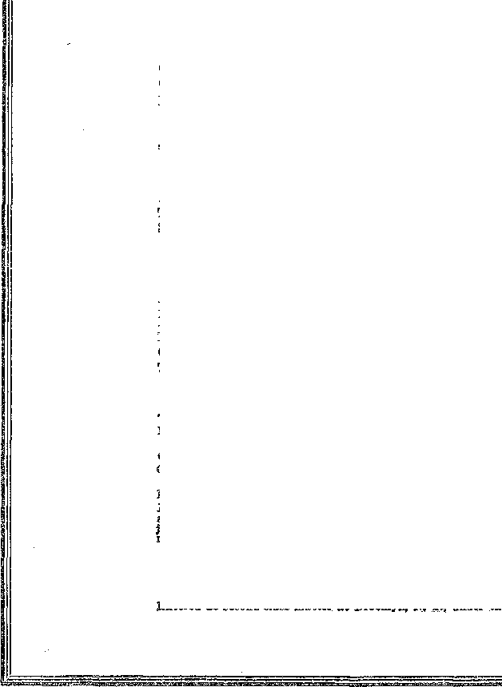

iiimomiHimiimmiiiiimnih
• in this iss.
once prosperous; now in adversity
neglected, exploited and starved
late “food fad” exposed
COVENANT BY SACRIFICE its operation and purpose; lecture , broadcast by Judge Rutherford
5c a copy - $1.00 a year - Canada & Foreign $ 1.50
January 9, 192 9
Contents
Social and Educational
Points of Interest ...........
Brooklyn to Be Like Heaven.......
The Need of Morons ..........
Police Access to Prisoners , .......
A Splendid Enterprise .........
The Summit of Infamy.........
Seven Cents Versus Eight Million Dollars . .
The Purpose of the British Press.....
M. Andre’s Debunking of Columbus.....
On Female Smokebs ....... .
A Still Longer Word . .........
Finance—Commerce—Transportation Value of Output per Worker ......... $35,000,000 Ford Plant in London........
No More Private Business ...........
SOPHY
Five Cents a Copy—$1.00 A Yeas
Political—Domestic and Foreign
What the Peasant Party Found In Rumania . . . The Baby of Coubbeck Loo . ....... .
The Noble Rep Man ......... , .
Rome Rules in Western Canada ........
Agriculture and Husbandry
The Eastern Shore of Virginia .......
Home and Health A Personal Opinion of “Aluminum Poisoning” The Way of the Reformer.......
So-called Medical Science and Liver ...
Religion and Philo
Spiritism in an Episcopal Church . .
Cadman’s Over-advertised Service . .
Knows He Has Been Lied To ....
Is This a Mere Coincidence? .... Bible Questions and Answers .... Covenant by Sacrifice (Part 2) ...
The Children’s Own Radio Story . .
235
235
254
241
227
243
249
Published every other Wednesday at 117 Adams Street, Brooklyn, N. Y., U. S. A., by WOODWORTH, KNORR & MARTIN
Copartners and Proprietors Address: 117 Adams Street, Brooklyn, N. T., V. S. A.
CLAYTON J. WOODWORTH .. Editor ROBERT J. MARTIN .. Business Manager NATHAN H. KNORR.. Secretary and Treasurer
Make Remittances to THE GOLDEN AGE
Notice to Subscribers: We do not, as a rule, send an acknowledgment of a renewal or a new subscription. A renewal blank (carrying notice of expiration) is sent with the Journal one month before the subscription expires. Change of address, when requested, may be expected to appear on address label within one month,
Foreign Offices
British ■ > t i t i > 34 Craven Terrace, London, W. 2, England Canadian . ■ , . I'1 Irwin Avenue, Toronto 5, Ontario, Canada Australasian .■ 5 . « « 495 Collins Street, Melbourne, Australia, South African . . <- , . 6 Lelie Street, Cape Town, South Africa
Entered as second-class matter at Brooklyn, N. Y., under the Act of March 3, 1879«
Volume X Brooklyn, N. Y., Wednesday, January 9, 1929 Number 243
The Eastern Shore of Virginia
THE Eastern Shore of Virginia is one of the garden spots of the world. It consists of two counties, Accomac and Northampton, slivers hardly more than ten miles in width, north of Cape Charles and between Chesapeake Bay and the broad Atlantic, extending sixty miles up and down the coast.
The soil is red sand, about a foot deep. The subsoil is a stiff red clay, which makes an excellent table on which plant food may lie until it is needed for consumption by the growing plants. The weather is just right for plant growth. The natives are at least as high a type of citizen as is to be found in the United States.
A generation ago the farmers of the Eastern Shore of Virginia were engaged in diversified farming. Their principal crops were wheat, oats, corn and live stock. The farms produced the greater part of the fertilizers needed, and supplied in abundance a variety of food for the family table.
About a generation ago the Eastern Shore of Virginia discovered, to her present sorrow, that her soil and climate and location with respect to markets is ideal for truck-growing, and particularly for the growing of wdiite or Irish potatoes.
The intervening years have been years of wonderful prosperity for the Eastern Shore. Perhaps in no other part of the United States may there be seen as many large and beautiful and well-kept homes of farmers as are to be seen in these two counties.
The garden-truck for the New York, Philadelphia, and other great industrial'’ centers of the north, starts from Florida very early in the spring, and terminates in Maine late in the fall. Each producing district has about two weeks when it occupies the center of the stage.
“The Shore,” as it is affectionately called by the natives, comes into the market with its white potatoes about June 10 and leaves it about August 1. It enters the market shortly before the North Carolina season has ended and leaves it after the New Jersey season is well under way.
Today the Shoreas in despair. There is hardly a farmer in the region but is mortgaged to the banks for as much as his farm is worth. Interviews were had with B. E. Mears, farmer and Bible Student, Cedar View Wharf, Va.; William Thomas, farmer and potato grower, Exmore, Va.; J. W. Chandler, potato dealer, Exmore, Va.A. T. Hickman, hardware merchant and potato grower, Painter, Va.; W. Cr. Emmett, cashier, Belle Haven (Va.) Bank; James E. Turner, farmer and potato grower, Exmore, Va.; E. Gr. Long, truck driver and machinist, Bible Student, Belle Haven, Va.; R. D. Vail, potato grower and landlord, Concord Wharf, Va.; Al Johnson and R. B. Johnson, farmers and potato growers, Concord Wharf, Va.; and C. R. Waters, sales manager of the Eastern Shore Farmers Association, Onley, Va. All are agreed as to the desperate condition of the farmers on the Eastern Shore, at the present time.
Ed. Kellam, Painter, Va., has a seventy-five-acre farm. Four years ago it was clear. Today he does not OAvn a foot of it, and meantime has farmed it every year.
R. C. Doughty, Craddockville, Va., has a 150-acre farm with a beautiful home. Three years ago the farm was all his own. Today he does not own a dollar of it.
One of the tenants of R. D. Vail said: "I came down here three years ago with several hundred dollars in money and went into the potato-growing business with my brother. This year my brother, and I produced and marketed 3,000 barrels of potatoes. My money is now all gone and I have not enough left of it to buy myself a pair of shoes.”
In the last three years an estate of several hundred thousand dollars has so dwindled in value that if it continues another year it will go bankrupt. The estate was cut up into small plantations and rented to potato growers. These growers were too pool’ to finance their own needs for farming, and as they received practically no returns for their products, they have had no money wherewith to repay the estate for money and machinery supplied.
The Average Potato Farm
The various experts visited agree, in substance, that the average potato farm has about thirty acres. This land, worth $100 an acre, represents an annual interest charge of 6% amounting to... $180.00
Taxes, including improvements, were estimated at ..... 65.00
Annual depreciation of equipment would be ...... 100.00
It is the custom of Eastern Shore farmers to use fertilizer at the rate of 1800 pounds to the acre. Up until this year many of the farmers have been . able to make a deal with the fertilizer companies to trade ten barrels of potatoes for one ton of fertilizer. The assumption in this trade has been that 1 the value of white potatoes is approximately $3.50 a barrel. Therefore the fertilizer companies expected to get back the $35.00 a ton which the fertilizer ordinarily sells for. But these companies lost so much money this year that it is doubtful if they can make any such arrangements for another season. Fertilizer for thirty acres of land, at 1800 pounds to the acre, would be 27 tons, which, at $35.00 a ton, makes the annual fertilizer bill of the average potato farm ........................ 945.00
Most of the small farmers were obliged to pay $40.00 a ton for their fertilizer; so the cost to them would be an additional ...................... 135.00
Seed potatoes are planted at the rate of five barrels to the acre. Therefore to plant the average farm of thirty acres would require 150 barrels of seed.
The common practice is to plant about one-half home seed, estimated as worth $3.00 a barrel, and one-half northern seed, which ranges in price from $4.10 to $5.00 a barrel. We therefore say, 75 barrels of home seed at $3.00 a barrel 225.00
And 75 barrels of northern seed at $4.50 a barrel ...................... 337.50
The usual price paid for the help in cutting the seed is 25c a barrel. On certain of the farms this cutting was done at 20c a barrel, the lowest price shown on any of the estimates. Therefore the cost of cutting 150 barrels would be .................. 37.50
The cost of working, i.e., plowing, planting and cultivating, was estimated at all the way from $6.00 an acre to $12.00 an acre, Some farmers actually paid the higher price, and from our studies we believe that about $9.00 is what is actually paid in practice .... 270.00
No one will deny that a potato grower must live. The lowest estimate of cost of living for one year was put at $720; while one man interviewed, with 160 acres under cultivation, and an elegant home to keep up and two daughters away at college, did not see how he could get along on an income of less than $6,000 a year. We put cost of living ................................ 720.00
Potato-bugs will come from the north, the south, the east and the west to do their share to make life interesting. It requires two applications of Calcium Arsenate, totaling twelve pounds to the acre, to satisfy their ravenous appetites. It costs eight cents a pound. Total for 30 acres, at least .............................. 28.00
Most growers would estimate this at least 10% higher .................. 2.80
. Total first costs .................. $3045.80
A Three-Thousand-Dollar Gamble
We are not misstating matters when, we assert that the Eastern Shore farmer bets his time and strength and over $3,000 in cash that he will at least come out even in his self-imposed task of supplying food for the table of the northern working man.
Frequently this cost is greater. Thus, one gentleman in the group interviewed, A. T. Hickman, Painter, Va., plowed in $96 worth of wheat, rye and crimson clover on his thirty-five acres of land. He did this to improve the land. He also spent $150 on a tent which he used to protect his potatoes from the sun and storm until he could get the best market. If we include similar items for our thirty-acre farm we shall have another initial cost of $82.29 for the wheat, rye and clover, and $150 for the tent, totaling ................ $232.29
Estimates of average production vary from forty to forty-five barrels an acre. We give the farmer the benefit of the better average. He will need 1,350 barrels to hold his crop on its way to market. Prices for pine barrels vary from 40c to 43c, according to location. Gum barrels are 2c less, but, as they can not be repaired, are not much used. We give our farmer a good location and the benefit of the best price on pine barrels and find that his expense for this item is .................... 540.00
The covers for the barrels cost 4e or 5c each, and again we give the farmer the benefit of a price he may not get 54.00
The usual price for digging is 20c a barrel. If the poor man who does this work gets any less, he suffers. This year, in some places, he got but 12^c; but we can not estimate the average cost at less than 20c, or another .... 270.00
The farmer must still get his product to market. Nobody will come to him and get it. If he lives close by the station his cost of hauling may be as low as 5c a barrel. If some distance away it may be 15c, the usual price, but we give this farmer an extra good location, and assume that his hauling cost will be only 10c a barrel; and this makes another ........................... 135.00
Total ........................... $4277.09
Here, then, we have before us the average potato farmer of the Eastern Shore. He is a business man of consequence. He makes a cash investment of $4,277.09 each year, his hopes being to maintain a livelihood for himself and family, keep his farm from running down, and so at least break even on an average crop. What must he have per barrel for his crop if he is to “just get by”? The answer is that, producing 1,350 barrels of potatoes at a cost of $4,277.09, he can not get along with a return of less than $3.17 a barrel.
Last year the average price which he received was $3.65. If he was a prudent, efficient man, he had a margin of 42c a barrel on 1,350 barrels, or $567, with which to*add to his standard of living, which, at $720, could not be a very high one in these days, for it costs about $500 a year to keep up a good automobile.
But last year is a long time ago. Nobody is interested in ancient history. What did he do this year? He received an average price of $1.25 a- barrel. Think that over. If this man did the very best he could do, and received an average crop, he could not fail to lose the difference between his investment of $4,277.09 and what he received, $1,687.50, or the small fortune of $2,589.59.
But this year he did not receive an average crop. He received double the average. He thus had all his usual expenses, with another $540 for more barrels, $54 more for their covers, another $270 for digging and another $135 for hauling; and if you figure up all that you will find that his total costs this year were $5,276.09, his yield was 2,700 barrels, his average costs were $1.95 a barrel. He lost 70c on every barrel he sold, and his total loss was $1,890, and that is just about what the average Eastern Shore farmer lost in cold cash this last season.
Not all did as well as to lose merely $1,890. The man who had a larger farm lost more. R. B. Johnson, of Concord Wharf, had 75 acres in and lost about $3,000 besides all his labor. He will not plant a potato this next year. He averaged to receive but about 90c a barrel for his crop.
The next question that arises in the mind of the inquirer is, Why must the fanner accept for his produce irftfcK less than if aerially cost him to raise it? and if you can answer that question down on the Eastern Shore you will be the greatest man that ever came into their midst. That is what they are all inquiring about.
Another question obtrudes itself. What about grading? It used to be that potatoes were potatoes, and if you dug a big one or a small one it made little difference; but now the chain stores do not want any very small potatoes and they do not want any big ones, because they are unpopular. They want all the potatoes of about one size, and potatoes do not grow that way. Here is another cost of sorting which is coming sharply before the farmer and making his already thorny way still more difficult. A future cost of grading is now in plain sight before the Eastern Shore farmer.
The world is changing rapidly. A cement road runs all the way down the Eastern Shore. Truck of one kind or another has been shipped by the highways direct to Boston and even to Detroit. Of course it would never pay to carry potatoes that far, because a truck can carry only fifty barrels of potatoes and the cost of running no farther north than Philadelphia would mean at least another dollar added to the cost. Strawberries were carried through to Boston in thirty hours, and were sold at auction on arrival.
Ordinarily the Eastern Shore sends into the market, in its season, 700 to 800 cars a day; but this year the shipments ran to 1,600 cars a day. And this year, by an odd streak of the weather, the Shore was into the market earlier than usual, with North Carolina later than usual, so that the two markets were piled one atop the other. The result was that the price was smashed to smithereens, and the growers of New Jersey, Kansas and Oklahoma were offered such little prices that they left their potatoes in the ground.
The Eastern Shore is exceptionally well situated to market its product. It is only a night’s ride by boat to Baltimore or Washington. It is but 208 miles to Philadelphia by rail. There is steamer connection to Havana, which is one of the large markets. Practically none of the Eastern Shore potatoes were left in the ground. They all went out at some price. The freight rate to Cuba is only 40c a barrel; to New York it is 69c. The seed for the Eastern Shore crop this year was better than ever, the quality was fine, and there was very little deduction for rot.
The Selling Proposition
Twenty-five years ago the Eastern Shore carried its potatoes into Cape Charles, and there they were bought on the spot. J. W. Chandler, one of the men interviewed, used to step out on the wharf, which was loaded down with thousands of barrels, and offer a price for everything in sight. If it was accepted he paid cash and disposed of the day’s receipts to his trade scattered all over the East. If another dealer who was present offered a better price, then the day’s receipts went to him and he handled it in the same way.
Today the farmer has absolutely no control whatever of his market. He meekly brings his stuff to the station and the local commission merchant receives it on consignment, not promising him that he will get a cent for it. Mr. Chandler, himself a commission man, denounces the whole scheme as unjust to the farmer to the last degree.
Prices are made in the following manner. A dealer in New York or any other large northern city telegraphs to a half dozen local produce dealers and asks for a price. He buys where he can buy cheapest. When the local dealer has his platforms all jammed with produce he offers them for what will move them.
Reductions of quotations are always made when a dealer has an overstock. When a dealer drops 10c it affects the market fc r that day. If he is not a big man the influence of his drop is small. If he is an important man it affects the market seriously. '
One day does not control another. All the stuff that is received today must be sold today in Boston, New York, Chicago, or wherever it can be sold. If there is a shortage in the market, then the prices go sky high. If the market is glutted the prices go the other way. Potatoes have sold in New York one day at $3.00, the next day for $1.50 and the next for $3.00.
The farmers all seem to feel that they are not getting a fair deal at the hands of the commission men. It is natural for them to feel that way. They see men rise to affluence in a few years while they in turn get nothing for their work. They know that the commission man never runs any risks, never takes any chances. L anybody is to lose, it is the farmer. The worst that can happen to the commission man is merely that his commissions may be smaller than usual because of the smaller prices secured.
The farmer says to himself, "All the potatoes I raised were sold and eaten by somebody, and the people who ate them generally had to pay a fair price. Why should I be the one to suffer ?”
It was a bad day when some trusting farmer turned his produce over to a commission man and said, “You sell it for me, and when you get your money let me have what you see fit to give me,” or words to that effect. Few men can stand the strain of being put in a position of trust. The world is full of Falls, Daughertys, Stewarts, Dohenys, Sinclairs and Hayses. If you have anything that is of real value it is a mistake to part with it until you have a definite understanding of just what you will get in return.
The farmer notices the commission man’s argument that he can not fix a price for his stuff because it is perishable stuff; but he also notices that as soon as the commission man gets the stuff into his own hands he has no difficulty then in naming a price.
Farmers are suspicious, do not understand the nature of marketing, and sometimes work against their own best interests. Thus, Will Shields, local produce buyer, bought potatoes for shipment to Baltimore. He had agreed with a certain farmer to give him $5 a barrel for his crop. (This was some years ago.) After seeing the farmer he was notified from Baltimore that the price had gone up 50c a barrel, and he gave the farmer the benefit of the extra 50c. This farmer never understood this matter; and because he did not understand it he would never let Shields have another barrel of his potatoes, at any price.
The farmers make the charge that commission men discriminate against small growers and in favor of large ones, and there is probably some truth in the charge. It may be done in this way. During the day the commission man may sell several lots of potatoes, at different prices. The custom is to pool all the sales for the day and divide pro rata; but a commission man may pool all the low-priced sales and not pool his best sale, but let the higher price for that sale go to some grower whose trade he desires to keep.
The local produce dealer takes a commission of 10c a barrel, and the New York produce dealer takes a further commission of 25c a barrel. If the potatoes come in bad condition the price of $2.75 may be cut to $1.75, and in that case the local commission man, the New York commission man and the farmer all lose. The way matters work out now the commission man actually makes more money when his grower is being ruined by overproduction than he does when the man who does the work receives fair compensation for it.
The farmer can not go from door to door to market his own produce. That is a business in itself; and in order to make sure that the farmer will not try it many municipalities have illegally made ordinances requiring licenses for such peddling. The Supreme Court of the United States has decided that every one of these licenses is illegal.
The wholesalers have a way of retaining control, not only of their growers, but of the grocers who handle their goods. The wholesaler may say to a grocer, “You must buy from me all the year around or I can not sell to you at all. You can not buy from others in July and August and expect me to take care of you when produce is not so plentiful.”
It is known that not all commission houses are honest; and that is putting the matter with a degree of mildness that would make the average Eastern Shore farmer angry just to even hear it said, because he would wish to make the statement much stronger and say that they are all a bunch of thieves. But perhaps that is not quite true.
Mr. Mears said on this subject: “It would be possible for a New York house to sell potatoes for $2.00 and to return $1.75 as the price they received, and they sometimes do it. I once talked with a Baltimore commission man who had only fifteen or twenty barrels to sell. He had to live from that small amount and maintain an office and family. I asked him how he did it, and he frankly told me that he kept out 25c on each barrel besides his regular commission, and never let the farmer know of it.”
It is the custom now in commission houses to whisper prices when in the presence of truckmen, as the commission merchants do not wish the farmers to learn the actual prices they get for the goods that pass through their hands. There are other concerns which allow no whispering on the premises.
Miller Edwards, 159 Dock St., Philadelphia, is said to be a man who takes 10% straight profit on the merchandise which passes through his hands, and farmers and grocers alike know just what each has to pay or receive. One could wish that all were such.
AV. H. Harrison, Washington, D. C., is also set down as another high-class concern which pays cash immediately on receipt of goods and allows no whispering about the place. Why can there not be more such men?
E. G. Long, Belle Haven, Va., truck driver, said: “On one occasion I had a load of string beans on the way north. I wired a Philadelphia house saying, ‘I have been offered $2.50 for . .these beans in New York. If you can not meet %*' these prices, do not unload my truck but send it on to New York. I am wiring my driver to the same effect.’ In spite of these definite instructions the Philadelphia man unloaded my truck and paid me only $1.50 for the beans. This grieved me, because, in my business as a truck driver, I had carried the beans for one of my fellow citizens. The commission merchant told . me that if I would bring another lot he would make up the difference. I did send another lot, and stood by and saw them sold for $4.75; and ■when he paid me off he gave me only $3.00.”
R. B. Johnson, Concord Wharf, Va., said: “This very morning I had string beans. C. R. Duer, local broker, said, ‘I can not possibly pay you more than $2.15/ Within a few minutes he sold them in Philadelphia at $3.25. I happened to know of the price received and made him set-. tie at the $3.25 price. Ten years ago Duer was worth nothing. Today he is a man of wealth. I am up at three o’clock in the summer and at five the rest of the year, and not only am getting nothing for my work, but am being ruined, and I can not go on.”
Juggling the Quality
Juggling the quality is an even meaner trick than lying about the price; yet it is done. Mr. R. B. Johnson, the gentleman last quoted, said: ■ “The year before last I shipped a car of potatoes to go to Cuba. The car passed Government inspection, and the inspector said it was the finest car he had ever seen. The date of the shipment was July 6. Settlement for this car was not made until the 28th of February. When settlement was made it was claimed that every potato in the car was rotten, and I received not a eent for that shipment. In other words, that car of potatoes was stolen outright by the concern to whom it was shipped.”
Years ago Samuel T. Apollonio, of Boston and Providence, a Bible Student w*ell known to some of our readers, while stilb a lad arranged with a captain trading between Boston and Haiti to sell for him in Haiti a number of barrels of choice cabbages. Young Apollonio selected the finest cabbages that could be found, packed them personally, and knew that every cabbage was good and sound when it left Boston. On the return of the vessel he asked the captain for his money and was told that on arrival in Haiti it was found that the entire shipment was worthless and they had been obliged to dump it into the sea. Subsequently one of the sailors informed him that every cabbage he had sent had been sold at the wharf in Haiti by the captain himself, and that the natives seized them like hot cakes at 50c a head. The captain stole the entire shipment, price, quality and all.
Years ago, also, according to a story told us, and which, at the time, we had every reason to believe reliable, a northern man went to northern Alabama to engage in peach-growing. Determined to make a success of the new venture, he paid particular attention to his first shipment and sent it on to an Indianapolis house whose name he knew, but with whom he had no personal acquaintance. He received word that the fruit had arrived but in a damaged condition and was hardly worth handling. He boarded the first train, went to the head of the firm, and, without revealing his identity, wanted to know if he had any choice peaches. The man replied, ‘Yes, I now have in the yard the finest ear of peaches that ever came into Indianapolis/ The grower asked to see them. The man took him out in the yard and with pride showed him his own car, saying, ‘Nothing as fine as this ever before came into this city/ According ing to the story, the grower pulled out a gun, shoved it against the man’s ribs and demanded instant settlement at the original price agreed upon or he would blow a hole clear through him. He got the money. How many such men there are in the commission business we do not know.
It is to be feared that commission merchants as a whole are disposed to take advantage of the farmer, and to take special advantage of him at the time when he most needs help, i. e., when markets are overstocked. Quite probably in a time of panic, such as this last year has been in the potato business, there are unreasonable and inaccurate claims as to damaged goods and prices received. We do not know this, and it may not be true.
Eastern Shore Farmers Association
The Eastern Shore of Virginia Farmers Association is the largest commission merchant on the Shore. It is a cooperative association embracing 85 percent of the growers and has crowded out most of the older jobbers. Members of the association agree to market all their stuff through this one agency, and are fined 25c for every package shipped otherwise.
Under the farmers contract with the association he is not allowed to have his own barrel cover; and even when lie has bought the covers they do not belong to him outright, but may be used only to market through the association the goods which they protect.
The association ships to 616 different cities and towns in the territory east of the Missouri. River. Its diversion points are Manhattan Transfer, Pitcairn, Northumberland, Toledo and Fort Wayne. In 1928 the association sold 13,800 cars (2,760,000 barrels) from the Shore territory, and employed ten. salesmen, located principally at the great distributing centers, keeping constantly apprised of the condition of the market.
Farmers who are members of the association receive dividends from the shares they have in the association; and after these shares receive their permitted dividends, the balance of profits, after payment of salaries and expenses of management, goes to the shippers in proportion to their shipments. The association claim strongly that their whole trouble is inability to cope with a vast increased acreage and increased production.
B. E. Mears was at one time a member of the association but has dropped out. He thinks the association too anxious to sell at any price and too ready to admit heavy discounts for spoilage. In one instance, after a check for $900 for two cars of potatoes was in his hands he was obliged to return it and accept about $325 for the two cars, though, to his personal knowledge, the goods were in first-class condition when turned over for shipment. Naturally a thing like this makes a man sore and makes him suspicious that his interests are not being properly looked after.
And Now, Enter the Chain Store
And now into this confused and perplexing situation there enters the chain store; and with connections all over the country, and the power to turn its money over every week, there is almost no limit to its buying power. The jobbers foresee that the chain stores mean their end; and it may mean the end of the farmers too, and it looks as if such would be the case.
Today there are 1300 chain stores. Mr. Chandler, commission merchant, many times referred to in these notes, has sold to the A&P, American, Reeves, Butler, Bohack, Cloverdale, National, Mayflower, Cupp, Kroger, Charles Thompson, Piggly Wiggly and Albrecht and reports them as fine customers, honest and easy to please, but now the A&P is doing its own buying.
The A&P deals with the farmer direct. It is even reported to have lost $250,000 this year through financing the farmers of North Carolina, but a quarter of a million dollars to a firm like the A&P is only small change. The lesson learned this year will be taken advantage of next year.
The A&P sales to customers are made on a small margin.’ There is an estimated difference of 13% in costs over the old method of buying through jobbers. The jobber sees the end of that 1.3%; and the farmer will see the end of something too, no doubt. '
On November 2, in Exmore, Va., Mr. Chandler was buying from the farmers at $1.95 and selling to his trade at $2.10. At the same time the A&P were buying from the farmers direct at $1.75, which is 35c less a barrel than the Chandler selling price. When potatoes sell in A&P stores at 16c to 23c a peck the selling price per barrel is only $1.92 to $2.76, not enough for the farmer to live on.
This past season it was noted on several occasions that when the markets became completely glutted with potatoes the A&P, with their enormous outlet, wyere able to come in and take the whole surplus, and of course they obtained it at practically their own price, and there is no way to prevent them from doing so. Nor can they, if they find it profitable so to do (and there is no question that such is the case), be prevented from waiting until such times as the markets are glutted to make their purchases. It may be depended on that such a vast organic zation has capable men detailed for just that work.
The concluding question is easy to ask and hard to answer. What is to be done? Nobody knows; nobody on the Shore, nobody on the coast, and, it is to be feared, nobody in the White House or anywhere else.
Conventions of the principal potato men of the United States have been called, to meet at Chicago and Norfolk. They will have remedies to propose. The first is that production be cut in half. It is easier said than done. Who is to tell an American farmer what he may or may not plant?
Diversified farming will be urged. It is but a makeshift. If one man can make a success one year by turning from the raising of potatoes to growing peppers for a pickle factory, what will happen when ten thousand farmers do the same thing? Good-bye pickle factory outlet, and profit.
A very intelligent farmer, Mr. Thomas, said the excess potatoes should be turned into starch and alcohol, as in Germany; but he forgot to say what would happen when we had more starch and alcohol than we could use or sell at a profit. And the Farmers Association claims to have tried the starch scheme and to have found it impracticable.
President Coolidge, mindful of the great famine in China and the fact that millions in India and Africa are always on the border line of starvation, has recently said that the wmrld is not producing more food than it needs, but that it is wholly a question of distribution.
That being the case, how fervently all right-minded men and women could wish that the happy day had come when matters like this could be made right. Divine Wisdom would be adequate for feeding the starving millions of Asia and Africa and at the same time giving the farmers of the Eastern Shore a proper return for their labor. We wish for nothing unreasonable when we wish “Thy kingdom come. Thy will be done in earth, as it is in heaven”; and it will surely not leave unsettled such a great and pressing problem as the production and distribution of human food.
Meantime we must stand by and see billions wasted in armaments that are obsolete before they are completed, and that are of no earthly or heavenly use to anybody. How much better that money could be used in paying for food and carrying it to the hungry people on the other side of the world. And in the end it would be good business too.
Points of Interest
red B. Smith, Secretary of the World Peace Union, in a recent address said: “One of the signers told me that the very room where the Kellogg compact Avas signed was charged with suspicion and fear that some one would gain an advantage. Then they talk of cruisers and three-billion-dollar navies and make the compact look like a piece of hypocrisy.”
ROOKLYN is to be made like heaven.
The ministers of the city have sent a request to Washington that the number of dry agents in the city of churches be increased from 12 to 100. When these 100 men have made Brooklyn like heaven we will issue another bulletin. P. S. Please do not expect any more bulletins.
lmer A. Sperry is the inventor of an electrical device which when moved along a railway track at seven miles an hour squirts white paint on every weak spot in the rails. Out of 822 derailments last year due *3 failure of track, 552 were caused by broken rails that will be detected by this new device before the cracks have spread sufficiently to cause a wreck.
CARBOLOY, a new material composed of tungsten carbide and cobalt, will cut a screw thread on a glass rod or bore a smooth hole in a block of concrete. It will finish 11,000 parts without necessity of sharpening, and will bore holes in any material without causing a taper. This product of the Krupp German works will hereafter be made in this country.
The Need of Morons
THAT was quite a thought advanced by Dr.
C. E. A. Winslow, professor in the Yale Medical School, that we need high-grade morons in our civilization because there are so many repulsive jobs which the alert do not desire. We presume the professor had in mind those Power Trust professors, but as he did not like to call them by name he just lumped them all under the one head as high-grade morons.
Gravity Control Possible
FOR aerial navigation to be entirely secure some sort of gravity control seems almost essential, and it is significant that this is now being discussed as a possibility. It is even now said that if an electric magnet is placed on the floor an aluminum plate can be made to float above it, and that one piece of supermagnetized cobalt steel will support another in the air when the positive pole of one is placed subjacent to that of the other.
Massachusetts Necessaries of Life
THE Massachusetts State Commission on the
Necessaries of Life has found that, by crooked, devious and dishonorable practices, 27% of the total cost of building in that state goes to the promoters and financiers. The Commission also says that the conditions it has uncovered are a disgrace to the building, banking and real estate interests of Massachusetts. They found instances where mortgage money furnished by hanks at 6% was let out again by the middlemen at rates figured to net 25% per annum.
I THE eight great industries of steel, gen- A SPLENDID enterprise is the Marshall eral engineering, motor vehicles, electrical -O- Stillman group of businesses in New York
Value of Output per Worker engineering, shipbuilding, cottons, woolens and worsteds, and boots and shoes, the average annual output per worker in the United States is $6,114, while in Britain it is only $2,548. The average horsepower per worker in the United States, in these same industries, is about 4.6, while in Britain it is 2.8. It is this difference in machine power which is crippling Britain and enabling American financiers to pile up the most fabulous fortunes ever seen beneath the sun. The race between the machine and the man is on, and the man, the British man, has already lost out.
The World Growing Better '
TN HIS address to the Episcopalians Presi-J- dent Coolidge said, “We can not doubt that the world is growing better.” He did not enlarge upon the activities of our Stewarts, Falls, Denbys, Dohenys, Daughertys or Hayses, nor upon the flourishing racketeering industries of our larger cities, but contented himself with a general statement. Meantime, in America, we have ten thousand murders a year.
Receptions of Zeppelin Visitors '
THE Prussian Minister of the Interior was
one of the passengers on the' Graf Zeppelin w’hich recently landed at Lakehurst, N. J. He has publicly called attention to the markedly polite and kindly reception granted by the American people and the impolite and unkind treatment by their official representatives, the police. He states that the police several times . yanked and pushed the passengers and that in one instance one of them was struck in the face.
Police Access to Prisoners
A WRITER in The Nation calls attention to the obvious fact that if the police were denied access to prisoners there would not henceforth be any cases of the third degree or other tortures of prisoners, of which rve have heard much in recent years. The care of prisoners awaiting trial ought not to be left in the hands of those who are financially interested in having them proven guilty. A warden of prisoners should not have any interest whatever in their guilt or innocence, but should be interested in them merely as human beings awaiting trial.
A Splendid Enterprise
which aims to provide employment for youths . that have at one time or another gone wrong. It is found that these youths make unusually clever workers, scrap among themselves for the chance to make extra money by over-time, and when given a share of the profits show intense eagerness to avoid waste. This all shows that all that humanity needs is proper guidance. The whole prison system, start to finish, is a disgrace and a reproach to the intelligence and goodness of mankind. The Bible approves no such system, but provided for Cities of Refuge where one who had gone wrong might go right.
LABOR-SAVING devices are hitting railroad employes hard. The average number of employes in the first half of 1928 was 99,227 less than the average for the first six months of 1927,113,154 less than 1926, and 183,364 less than in 1923. The average hourly rate of pay of railroad workers is only 66.8 cents.
THROUGH bus service between New York and Los Angeles has been inaugurated.
Three busses leave daily on the 3,433-mile route via Pittsburgh, St. Louis and Denver, scheduled to complete the trip in five and one-half days, one day longer than by train. These busses contain kitchen, toilet and sleeping accommodations for twenty-six passengers. Radio entertainment is provided. Passengers are allowed sixty pounds of baggage and may stop over on the trips at their convenience.
HAVING been defeated in their efforts to force Roman Catholic practices on the people, the bishops of the Anglican church are now going to use their unapproved prayer book wherever they can, regardless of the fact that it was turned down by Parliament. In other words they will do illegally what they were forbidden to do legally, and thus have their own way anyway. Now if the people will just shut off their support, that will end the whole row.
WHEN the Peasant Party came into control of Rumania early in November, not only did it not find a single cent of money in any of the cash drawers, but it found that many long dead and others not yet born were drawing regular salaries, while actual working employes, of the government were left unpaid. In many instances persons were living in grand style at government expense who held no pretense even of government positions of any sort. Now the wretches that have been displaced are referring to the new government as a “terrorism of the masses”, doing everything possible to get the public scared into putting them back into power. American and other financiers were just about to loan $250,000,000 to the government that has been displaced.
TTITHERTO Jerusalem has been cursed with -LJ- beggars, mostly Arabs, who have made it a business. A new ordinance now in effect prohibits all future begging in streets or homes, and, if enforced, will put Jerusalem ahead of most of our western cities in this respect,
THE summit of infamy will not be reached when Leopold and Loeb are shortly given their liberty, as is now likely to be the case. It was reached in Boston when Sacco and Vanzetti were executed, after seven years, for a crime of which nobody believes they were guilty. The Outlook and Independent has devoted an entire issue to affidavits showing that Vanzetti could not have been guilty of the Bridgewater holdup, and that this information was in Governor Fuller’s hands when he sent the men to the chair.
Hexry Ford is building a $35,000,000 plant in
London,, where cars will be built for the European, African and Asia Minor trade. The plant, which has a frontage on the Thames of two-fifths of a mile, and extends back one mile from the river, will have a capacity of 200,000 cars a year. It will be a British plant, manned with British workers. Ford will supply 60% of the capital of the new venture. It is a safe bet that those who buy the balance of the stock will speedily become millionaires.
rpiIE open shop committee of the National -*• Association of Manufacturers has made the surprising and rather comical charge against the American Federation of Labor that the latter has been exaggerating and over-emphasizing the communist forces of the country as a menace to American industry. Looks as if, in their desires to have open shops, some of the manufacturers hope that the labor organizations will all turn communistic; but if they do so what 'will become of Svme of these great captains of industry, such, for instance, as povTer trust executives? It is a good thing, perhaps, to be in the public eye, but not in the form of a cinder; for even the public can get tired of a cinder -which persists in making itself and everybody else uncomfortable.
A Legionnaire Wishes Justice Done
Captain E. P. Coll, member of the American Legion, Hoquiam, Washington, is urging the release of the eight men ■who have now been confined nine years for the killing of Warren 0. Grimm at Centralia on Armistice Day, 1919. Captain Coll, in a letter to his comrades, deplores the unjust attitude of the Washington Legionnaires against these unhappy men and says: “It is common knowdedge among at least certain posts of the American Legion that the attack upon the I. W. W. hall began vdien Warren 0. Grimm and other members of the Centralia division broke from the line of march and began to batter down the door and windows of the hall.”
Spiritism in an Episcopal Church '
ST. MARKS-IN-THE-BOUWERIE, the Episcopal church that so distinguished itself by having barelegged girls dance in the pulpit, has gone one better by having an out-and-out spiritistic seance at which a woman under demoniac control uttered gibberish poetry for the spiritual uplift of the audience. Christ used to cast demons out of people and denounced them as unclean, lying spirits. Now they are allowed to use the pulpit and thus fulfil the Scriptural declaration, ‘Babylon is fallen and is become the hold of devils and the cage of every unclean and hateful bird.’
Cadman’s Over-advertised Service
AMID a blare of trumpets it -was announced that Doctor Cadman wmuld preach over the radio to the greatest of audiences. The services started October 14, with just twenty stations on the air. This is considerably less than half the stations that have several times listened to Judge Rutherford, and less than one-fifth the number that listened to'the Judge on the occasion of his address at Detroit, August 5, of last year, when 107 stations broadcast at one time, the greatest hookup in history. In his speech Cadman said, “A peace conference of all religions of mankind is proposed for 1930”; and then he added, “There is nothing but good can come of it.” All that mankind has to do is to look back to 1914-1918 and see what all the religions of mankind did to peace then, and they will know rvhat they would do to it again if they had the chance. .
No More Private Business
TV"illtam Butterworth, president of Cham-W her of Commerce of the United States, in an address before the Associated Business Papers of New York said: “There was a day when the institutions of business were indeed private. - That was a day when the ownership and management of business enterprises were vested in one man, or at most, in a small group of partners. But, today, literally millions of our people are shareholders in our great agencies of finance, transportation, communication, production and distribution. And the end is not yet of this widespread public ownership of business.” When William said that last sentence lie said something; but he forgot to go on and say when we would all be awarded free, stock and bonuses, etc., in these corporations which he now admits control all avenues by which one might make a living. "Won’t it be nice when all these great corporations put us all on the payroll? Who would like to be first?
On the Same Day
ON THE same day that the president of the
Chamber of Commerce of the United States made the above happy remarks that private business is passing, because the big fellows are getting it all, along conies Mr. E. W. McCullough, manager of the Department of Manufacture of the same Chamber of Commerce of the United States, and in-addressing the Findlay, Ohio, Chamber of Commerce, said: “The day of the big, inflexible plant, facing intense competition in distribution as well as production, seems to be passing. The cry that the big fish are eating up the little ones sounds less alarming. Already many of our newer and best-managed industries are getting away from building very large units and leaning more strongly toward those commensurate rvith the market to be supplied.” Seems like some confusion here. Butterworth says the big fellows have gobbled all the little ones, and McCullough, working for the same concern, says it is no such thing. These boys ought to get together and figure out a little more closely just what they are going to ladle out to the rest of us, so that we may be able to tell which one to believe, or whether it is desirable to tell New York people one thing and Findlay people another. Maybe that is the clue to it.
Baldvino and Pennsylvania State Police
WHEN the miners at Export, Pa., were on strike, a man named Baldvino was standing in front of the post office of his home town. The troopers came up and Bruce Kunkle grabbed Baldvino, struck him again and again with a black-jack, broke three of his ribs, and so injured him that he has not been able to work since that time. The American Civil Liberties Union is suing Kunkle.
Seven Cents Versus Eight Million Dollars
THE New York Sun, October 17, 1928, first page, column seven, narrates the sending to the workhouse for six months of a deaf man charged with having stolen seven cents from a fellow spectator. He pleaded guilty of the offense and had many times previously been arrested for similar crime.
In the next column Maurice Connelly and Frederick Seely, former officials of Queens Borough, New York city, are reported as having been found guilty of collecting about $8,000,000 in graft from the taxpayers; and although this sewer graft has resulted in hundreds of poor people’s losing the very homes over their heads, these two villains get but a year in jail and a fine of $500. If this is not a good picture of the Devil’s organization, send us one.
Turkey Struggles with Roman Alphabet HDURKEY is in the midst of a gigantic strug--*■ gle with the Roman alphabet. The law has gone forth that all good Turks, big and little, must learn the Roman alphabet in sixty days or lose their jobs. Text-books galore have been published, newspapers are helping, and today Turkey is one vast school. On December 1, all newspapers in the country abandoned Turkish characters and went over to the Roman alphabet.
A Shrinkage of 249,961 Years
UNIVERSITY of California geologists found bones of a mastodon in Marin County, California, and published careful estimates that they had been in the location where they were found for just 250,000 years. The facts are that these bones were found in Alaska. The ship that brought them down sank off the coast of California. A diver rescued them, intending to give them to a saloon-keeper fond of curios. He started for the saloon but his buggy became mired with the heavy bones. He heaved them overboard into a little creek where the University of California scientists found them. But it was not 250,000 years ago he heaved them overboard; it was only 39 years ago, and the scientific difference is represented by a shrinkage of 249,961 years. How easy it is to make mistakes!
[Excerpt from “Falsehood in War-Time" by Arthur Ponsonby, M. P.J
IT IS not often that we have a confession of falsehood, but the story of the baby of Courbeck Loo is an illuminating example of an invention related by its author.
Captain F. W. Wilson, formerly editor of the Sunday Times, related the story in America in 1922. The following, account appeared in the New York Times (reproduced in The Crusader, February 24, 1922):
A correspondent of the London Daily Mail, Captain Wilson, found himself in Brussels at the time the war broke out. They telegraphed out that they wanted stories of atrocities. Well, there weren’t any atrocities at that time. So then they telegraphed out that they wanted stories of refugees. So I said to myself, “That’s fine, I won’t have to move.” There was a little town outside Brussels where one went to get dinner—a very good dinner, too. I heard the Hun had been there. I supposed there must have been a baby there. So I wrote a heart-rending story about the baby of Courbeck Loo being rescued from the Hun in the light of the burning homesteads.
The next day they telegraphed out to me to send the baby along, as they had about five thousand letters offering to adopt it. The day after that baby clothes began to pour into the office. Even Queen Alexandra wired her sympathy and sen! some clothes. Well, I couldn’t wire back to them that there wasn’t a baby. So I finally arranged with the doctor who took care of the refugees to report that the blessed baby died of some very contagious disease and couldn’t have even a public burial.
And we got Lady Northcliffe to start a creche with the baby-clothes.
The Purpose of the British Press By John Nicholson (Scotland)
IT IS my privilege as a colporteur to meet many classes of people, rulers and ruled.
Readers of The Golden Age are well aware that those who exercise ruling power over the people are composed of three elements, to wit, politicians, profiteers and preachers, and that these elements control the world’s newspapers, by which means they keep the common people in the dark.
The following experience amply proves the above statements to be true. While calling on some of Glasgow’s business people in connec-. tion with Judge Rutherford’s book Deliverance., I met the Scottish representative of the London Times. After I explained my mission, he said, “I can not have anything to do with Judge Rutherford. That man is against the politicians and the press, and this paper is owned by the politicians. Our purpose in getting the London Times into Scotland is in order to keep the view’s of our party before the people.”
Here, then, is a candid admission by one who is in a position to know, that the real purpose of the London Times is not to give the British public the truth of events as they occur, but to keep before the masses of the people only what the politicians think the people should know.
The political element goes hand in glove ■with the financial element, while the ecclesiastical wing of the ruling factors stand by as a tool ready to give a religious coloring to the evil deeds of her supporters. This unholy combination controls the British press, and by this means deludes the common people. A glaring example of how the truth is held from the people is given us during the coal strike. A. G. Cook, the miners’ secretary, contended that if the government bought over or nationalized the mines, conditions for the miners could be greatly improved.
Through the press the people were told that the government could not afford to buy the mines, that the country was almost paralyzed financially, and that the coal owners had been running the mines at a loss—for charity, perhaps? Cook and the miners were grossly misrepresented by the. newspapers.
The facts now- at hand show, how’ever, that it cost the country three times as much money to defeat the miners as it would have taken to buy the mines over. Thus the rule of tyranny and oppression continues.
But let the people take courage. The cry of “Deliverance” is going throughout the land. Jehovah, the true friend of the people, -will soon arise in battle, shatter the present corrupt organization and free the people, and then all men shall know7 the truth.
IT IS a good thing to go atvay from home sometimes to find out \vhat people think about you. We pick up the Manchester Guardian and find the folloxving summary of an investigation of the United States Government’s treatment of the Indians under their care, made at the request of the Secretary of the Interior:
“The policy of the Government pauperizes the Indian. '
“Health conditions are very bad, with mortality and infant mortality rates markedly higher than among the white population.
“The administration of the Indian Bureau can only be called a success so far as the administration of the Indians’ property is concerned.
‘ ‘ The educational efforts of the Bureau for the Indians are of negligible value.
“Much of the land alloted to the Indians, on which they are expected to earn their living as farmers, is virtually worthless, and in any ease they are not given the capital, the expert advice, or the moral support which would be necessary to give such an enterprise' any hope of success.
“The white personnel of the administration, chiefly because of the low salaries paid and the isolation of some of the posts, is distinctly inferior. This is true in particular, the report says, of the doctors, nurses, and teachers.”
The investigators found that the Government was following a deliberate policy of breaking up the Indian families by sending the children off to boardingschool at an early age. There they are taught from one standard rigid curriculum which is identical throughout the United States, regardless of special circumstances, such as ignorance of the English language or peculiar local customs and conditions. With inferior teachers it is not surprising that this work should be so largely ineffective. Some of the “Indus-
trial training”, of which a great point is made, consists in teaching vanishing trades which are no longer of any economic importance.
The Government seeks to feed each Indian child at a cost of fivepence half-penny daily, plus such food as can be raised on the farms which are conducted in connection with the schools. In order to produce this food every child above the fourth year of school must work half of each day in the fields or barns. This gives them little opportunity for recreation, and in some cases fatigues them to such an extent that their classroom work is nullified. In spite of the efforts to produce extra food most of the Indian children are badly under-nourished. The report refers to their condition as “a grave emergency”, and recommends that Congress should immediately appropriate £200,000 to increase the quantity, quality, and variety of their food.
The two most serious diseases for the Indians are tuberculosis and trachoma, and inadequate diet is an important factor in each of these. The report criticizes the medical service of the Indian Bureau for paying insufficient attention to diet in trachoma cases. The custom of the doctors is to perform a radical operation for trachoma, and the report says that these operations have been undertaken in many cases when they were not necessary, and in some when the patient did not have trachoma at all. Even in a special school maintained for Indian children suffering from trachoma the diet was found to be inadequate. Milk was not given any child in this school unless his condition was so bad that he was actually in the hospital.
Before the white man began to interfere with them the Indians lived a fairly healthy life. Most of them occupied wigwams or tepees so flimsy in construction that they were well ventilated. Today they use white men’s houses, and these are wretchedly ventilated and appallingly overcrowded. The report says that fewer Indians use beds than use modern cooking stoves, and that those who employ washable bedclothes are fewer still. Because of the overcrowding it is rarely possible to segregate those suffering from communicable disease, and this is one reason why the Indian death-rate is so far above normal. The great majority of the Indian homes have no running water, and are without toilet facilities of any kind.
The Government has gone on the assumption that the Indians can not be trusted with cash, and this has helped to pauperize them. When the lands allotted to them to live on have been good, these have usually been taken from them in one way or another by white men, often with the connivance of the Government administrators. Some lands have been purchased by whites, and the Indians have been allowed to spend their capital thus acquired, drawing it a little at a time from the resident agent. In other cases leases have been made, often at unfairly low rates. While a few Indians on whose land oil and minerals have been discovered are wealthy, the report states that the average red man is “poor, even extremely poor”. If an Indian dies leaving several heirs, his lands have too often been sold off in order to provide readily divisible property, and the inheritors in a few months or years are left penniless.
M. Andre’s Debunking of Columbus
WHEN wTe -went to school we were all taught that Columbus was a great discoverer. Now M. Andre, the French scholar, in his work La Veridique Avenhire de Christophe Colornb has proven that his discoveries were made by another five centuries before, and that the knowledge of Vinland the Good, or, in other words, America, was common among the seafaring men of Columbus’ time. Columbus’ trip to Iceland to get the details of its location shows him to have been an enterprising man. That Leif Ericson discovered America is a proven fact of history.
We all thought that Columbus was a great admiral, but now it seems from the work of M. Andre that he was not a navigator and could not have made the trip to the West and returned without the assistance of his vice-admiral Mar-Alonso Pinzon, who was himself about to make the very voyage of discovery upon which Columbus embarked.
Andre says that as an administrator Column bus was wholly a debit. Nothing worse than his devastation of Santo Domingo and his extermination of an inoffensive native race in his mad search for gold is known on the pages of history. The natives actually suicided wholesale by starvation rather than attempt to live under such a cruel despot.
Andre shows that the imprisonment of Columbus Avas directly due to his t .slavement of the natives in Auolation of Isabella’s express commands, and to his attempted organization of a rebellion against the laAvfully appointed executive sent to take his place.
Andre presents evidence which will be extremely interesting to all Italians and Spaniards to show that Columbus was born a Galician Jew and that his parents turned Catholic merely to save their lives. It seems that his parents were given the choice of expulsion or acceptance of the Roman Catholic faith and, like hundreds of thousands of other Jews, bowed to the popular frenzy to gave their skins and shekels.
In his earlier years Columbus was a personal friend and benefactor of Alonzo Sanchez, a sailor whose vessel was wrecked on its return from an island far to the west which Sanchez called Antilia. The name still survives, for the West Indies are called the Antilles to this day.
Rome Rules in Western Canada
A SUBSCRIBER in British Columbia, W. P.
Carson, sends us a little magazine containing an interesting seven-page article narrating his experiences with the gentlemen who at one time received his money for masses and subsequently took his whole pile for a worthless farm.
Before Mr. Carson got his eyes open and ceased purchasing his religion of the beskirted fraternity he tried every possible plan to get some dignitary in the church to pay attention to his claims against the priest who first got his money for the worthless land and then, by legal trickery, repossessed himself of the land so that he could sell it again to some other member of his flock.
When Carson wrote to the Archbishop of Regina and the Apostolic Delegate to Canada and pressed his claims, they first assured him that they could not interfere and then made a concerted effort to have him declared insane. The only thing that saved him was that the physician sent to pass on the case happened to be an honest man.
Mr. Carson sent us a copy of the little magazine containing the story, and with it the following letter of explanation, which we are sure will be read with interest by his fellow subscribers to The Golden Age:
“ I am mailing you a copy of The Beacon, a Vancouver monthly publication. I am the party referred to as a “farmer robbed by a priest”, while the actual facts of the matter are ‘a farmer robbed through Canadian political organization known as the Roman Catholic church’.
“A great many wonder why I can’t get justice against those ancient political tyrants. The real cause is that I took a very active part in the organizing of the “farmers’ political’ when it first came into existence in 1917 in the constituency of Maple Creek, Sask. In fact, I may plead guilty to calling the first mass-meeting and acting as a delegate to the first convention which elected the first farmers’ member to the federal parliament of Canada. In doing so I committed a very grave offense against the Roman Catholic church, also the old line political parties of Canada. It was breaking away from the stone age traditions which still prevail to a very great extent in the life of the Canadian. (I might state that I am a Canadian whose ancestors hewed out their homes in the bush of what is now Toronto and Hamilton, Ont.) For such outlawry I was condemned. That is, so far as the present state of civilization would permit them. And that is a great deal more than most people realize. As an example to show the strangle-hold that Rome has in Canada and on the Canadian politician, I may state that since this article was published in The Beacon I was able to secure a copy of this Roman Catholic priest’s affidavit to the court in his action against me.
“I found that the third paragraph in his affidavit was pure and simple perjury. I immediately made out an affidavit, sworn to on the 14th day of August, A. D. 1928, in the city of Vancouver. I left a few copies of the 'good mediator’s’ affidavit along with a few copies of my own with some prominent people in the city and sent the original affidavit to the prosecuting attorney of the Swift Current (Sask.) Court, where the good priest committed the perjury. I then notified the attorney-general of Saskatchewan that I had laid criminal information against this Roman Catholic priest in the form of an affidavit made by me charging the priest with criminal perjury to the court.
“As we all know, it is the duty of the prosecuting attorney and the attorney-general under their oath of office to prosecute all such criminal matters. Did they prosecute? No. They first tried to ignore my affidavit; and when I insisted on an expression of their attitude I got a letter from the Swift Current Court to the effect that my affidavit charging this good priest with’ criminal perjury was placed on the court file of the old bygone civil action that was cooked up against me and put through the court nine years ago. I might also state that this faked-up civil action of nine years ago was instigated for the purpose of preventing me from starting a criminal action against this Boman 'mediator’ in 1919-20 charging him with fraud as a confidence man.
“To show how the Canadian courts function in the interest of Borne in Canada, when this faked action was granted by the court and without any visible grounds for an action, the court granted the priest an order for immediate possession of this gold-brick farm and ignored my civil and citizenship rights by refusing to allow me to defend my interests against such an order. They refused to serve me with a notice of the order and allow me the legal twenty-one days to file a defense against such an order. Still they knew that I was residing in the district.
“Today they state that there are no records on the court files to show on whom or where the notice (summons) was served or if it was ever served at all. Today we can get no recourse even from a criminal standpoint against a representative of the pope in Canada. It is the old inquisition laws in disguise. We have applied to almost every official from the Minister of Justice down to the local prosecuting attorney, and always with the same results. Borne with her tyranny and hypocrisy reigns supreme over Canadian common law. They are selfstyled divinely-appointed guardians of the people, not in the interests of the people, but in the sole interests of their fat bank accounts. It is the richest and most powerful political organization in the world.”
A GENTLEMAN in Bradenton, Fla., who has discovered that he has been lied to, carried a $10 advertisement in the Tampa (Florida) Daily. Tribune, offering $200 for proof that the soul is immortal. In his advertisement he compared Genesis 2:17, God’s statement that death would be the penalty for sin, with Genesis 3: 4, Satan’s statement to the contrary, and then said:
This very important scripture gives the point on which God and Satan differ. The so-called ministers that belong to the five biggest denominations, namely: Catholic, Methodist, Baptist, Presbyterian and Episcopal, are not ministers. They have no right to have “Rev.” placed in front of their names. They are not ministers of churches. They have used even stronger language than Satan did to dispute God’s word. Satan said, “Ye shall not surely die.” They say we have immortal souls that can not die. They are at least guilty with Satan, and should not be favored any more. I am writing this short letter to call attention to my ad. in this number of the Bradenton Herald, which shows that the men claiming to be ministers for the five biggest denominations are not ministers at all, but that they are only very wicked men.
A SUBSCRIBER in Texas draws to our attention the fact, often mentioned by Bible Students, that “ten” seems to be a symbol of national completeness, and that it was just ten years to the day, namely, on Armistice day, 1928, following the close of the World War, that two of the principal WATCHTOWER radio stations, WBBR and WORD, were unjustly reduced in wave length.
The subscriber wishes to know if this is a mere coincidence, or if we may see the hand of God in it. We do not know that this means that the United States Government has had a ten-year opportunity to accept the truth and has finally and officially rejected it: but it may mean that.
Just at the moment we are much more interested in the fact that it was only a week later (and there are seven days in a week, and “seven” is a symbol of perfection in heavenly things, if that is of any interest to Bible Students in this connection) that the WATCHTOWER weekly hookup began its services, a service which we confidently hope and believe will be blessed by the Lord as no other hookup was ever blessed, and a service which we also confidently hope and expect will never cease.
On Female Smokers By J. A. Bohnet
ABOARD the Northern Pacific mixed train crossing the border between the United States and Canada on arrival at Grand Forks, B. C., depot and looking out of the coach window we beheld a most unusual and disgusting sight.
Seated in a motor car close to the depot platform were two men and four women (we are not saying ladies), all of them with lighted cigarettes and puffing away with alternate singings of college song and bold gesticulation, as though they considered that they were doing just the proper thing. Holding the cigarettes nonchalantly between two fingers, then between thumb and finger, they presented a pitiable sight for the onlookers.
Several persons in the coach commented on the spectacle as being most disgusting. Others, after a brief glance, turned their heads, not wanting to see any more of it, and expressed their opinion in no uncertain way.
The writer has visited every state in the Union and stayed therein from two weeks to seven months since the World War time and in all that while has not seen more than three women smoking a cigarette, and only one (an aged Southern woman) smoking a pipe. And still he is being constantly assured that “even the women smoke now”. He has not generally found it so.
He did, however, find a young woman smoking a cigarette in a railway coach when she and he were the only occupants. Whereupon he promptly informed her that if she must smoke
she would have to go into the smoker. She “looked daggers” at him, but stopped smoking forthwith. .
So far as his observation has gone, if the women do smoke they have some respect, or enough of respect, to do it in private. It may be no worse for women to smoke than for men, but it certainly looks ten times worse. If the women would abhor men who smoke there would be limited smoking at least in public. And when shortly the kingdom of heaven on earth is in full operation the smoker will hardly be in evidence.
Is it nice for a human being to blow forth his befouled smoke where decent people have to inhale it whether they will or not ? If spitting may spread disease, as is stated on the placards we see in public places, how about the tobacco smoke’s carrying disease germs?
Do smokers stop to think that what may be a comfort to themselves may be a decided discomfort to more cleanly people? Is a man justified in securing to himself comfort at the expense of proportionate discomfort to some one else?
But what does the smoker care about that, as long as no one audibly objects or he is not hit on the head with a club or is in no danger of arrest and a penalty for his misdemeanor?
He may be thoughtless and may not realize that his habit is at least a filthy as well as costly one. He might well do a little thinking on the matter and be clean. Is there a cleanly woman who wants to be kissed by a tobacco-odorized mouth? Smokers, think it over very carefully.
A Personal Opinion of “Aluminum Poisoning” [By a friend of the cause to his doctor in California.]
TUESDAY night, October 2, and before I say my prayers and retire in a proper manner, will express thanks for reading matter left today, and, having gone over or through the book on aluminum, will say this much about it: It contains much information not heretofore encountered, and though there is much repetition and a tendency to be somewhat prolix, the importance of the subject will make it excusable.
As I look upon his photographic shadow, Betts, a very good impression is obtained of the man; and what he has to say surely sustains it, as he was against the invisible enemies of the public health, who are determined to keep aluminum on the market for financial reasons.
It is hard to account for deliberate wrongdoing in men who are supposed to have some regard for their fellow men; but business seems to have no conscience, and to insure trade and profits, not one of them will pay the least attention to the Golden Rule. And furthermore, if they knew that death would result to large numbers who buy and use their poisonous metal, they would still make and sell it until prohibited from so doing by statute laws.
And when I think that every one of our common soldiers in the World War had to cook and eat from aluminum utensils, who can ever estimate the number who were made sick and even died from aluminized food? And yet this is a Christian nation, in name, and we are all brothers in Christ, or pretend to be. While I have no particular desire to extend this very unsatisfactory existence any further, I do wish, while. ' I stay around here, to be as healthy as possible ; so I have quit using aluminum and am profiting by the discoveries made by Dr. Betts.
The Way of the Reformer By Dr. C. T. Betts
1 ASSUME from your letter that the gentleman of whom you speak has probably been up to your place. He has been here. The Federal Trade Commission’s attorney dropped in here the other day, with invested authority to examine all my accounts and correspondence. After determining that he presented proper credentials, I gave him the privilege desired. He advised me that I had been charged with conspiracy and violation of the Clayton Act, informally. '
The investigation which he has conducted, to be placed before the Commission, is to determine whether or not the charges should stand against me and formal action be taken. I note with interest that they tied up the two books, An Opinion upon Aluminum and Aluminum Poisoning. Thus if they succeed in this action, as charged, both books will be suppressed.
I have secured information from every available source on this subject. It made no difference to me if it came from aluminum manufacturers, enamel manufacturers, physicians, chemists, college professors, or others. I am still doing that very thing and do not believe that this is against any law in our land.
jR-ecently while in New York, I called upon the party by the name of Schafberger, who stated in the past, in one of his letters, that he had called upon you. On account of the seriousness of making a matter of this kind known to the public, I did not mention to you the results of my visit to his home. He did not fare 'so well as Mr. Howard of the Toledo Times. Coincidences do happen. ■
Mr. Schafberger considered this matter of vital importance to humanity. He made the tests as suggested in my little book, visited some physician first and was advised to read the book. Then he became well of his long-standing stomach disease and he at once disseminated. this information to his friends by buying a few of the books. Then, when he found others becoming well of their various diseases, he purchased more books, at this time $10.00 worth instead of $5.00 worth. Then he began to talk upon the subject and sold the books. Next time he ordered $25.00 worth, then $100.00.
At the time, or shortly after the $100 worth was delivered to his home, he was “humped off” (a New York expression) while waiting for a suhway train. He was pushed right over on to the rail, falling head first and smashing a hole in the top of'his head, crushing his skull. It was evident from his talk with me that he did not want his family to know ho’w the accident occurred. He has a daughter of about twenty-two years of age and a good wife, and he desired to have the daughter sell these books. The result of his crushed skull was that he became insane, and so far as I know’ he is at present at the Matteawan Asylum for the Insane.
After learning this I advised the daughter that I would take the books off her hands or secure some one in New York city to purchase them. This I have succeeded in doing; so at least the daughter -will not meet the same fate as her father.
I note your statement regarding my being a cellmate. I assure you that if we get into the same ward for making a thing of this kind known to the public, nothing will please me more than to have the opportunity to see your smiling face across the way, as I will know that I am in splendid company.
I do not think you would fare so well, however, in looking at mine, because I get pretty mad; especially was this true when the Federal Trade Commission demanded that I do not publish a document which had already been published and distributed throughout the land and then call it an official confidential document.
So-called Medical Science and Liver By Dr. G. R. Clement? [Reprinted from How to Live for Health and Strength]
SO-CALLED medical science has made another “discovery”. That is not extraordinary, for it has made many in ages past and will make many more in ages to come, for “discoveries” are easy to make by an institution founded on ignorance, error, and superstition. Some day so-called medical science will discover that all its “discoveries” have disclosed nothing but its own ignorance.
The new discovery referred to is that “calf liver is no longer food, but medicine”. The press of February 29, 1928, states;
Medical science has taken over as much of the country’s output of calves’ liver as it can get its hands on, and what isn’t being dispensed on the doctor’s prescription, or bought by hospitals, is being ground up for the manufacture of “Calves’ Liver Extract No. 343”—a specific in the treatment of pernicious anemia.
It is said that the new “discovery” is based on the experience of Dr. George Whipple, now dean of the medical school of the University of Rochester, who fed a “handful of calves’ liver to a dog that had been bled in the laboratories”. The report says:
The dog “picked up” in remarkable fashion. A few days later it was as frisky and apparently as well as ever.
What a remarkable experiment on which to base such faith and hope. The foundation of every medical theory is just as flimsy as this one, and that explains why medical theories decay and disappear so rapidly.
Dr. George Minor, of Harvard University Medical School, states that he has induced decided improvement in cases of pernicious anemia, by feeding to such patients large quantities of calves’ liver.
Nothing strange about that. .The general ailments of man are due to his violating the law of his being by saturating his body with a combination of many kinds of poison. The physical and mental condition of such patients can always be improved by feeding them on a monodiet, even though that mono-diet be composed of substance so poisonous as calves’ liver is known to be. .
It is a combination of many kinds of poison that quickly destroys the body’s vitality. When the body is left free to concentrate its energies on a single poison, it will usually survive for years before succumbing to the influence of the enemy, as in the case of a tobacco user, for instance. It often requires years for the deadly nicotine to destroy the body’s vitality.
The tax on the body’s vitality is always in direct ratio with the degree of destructiveness of the poison ingested; and the body is competent to combat with greater effectiveness one kind of poison than a combination of many kinds of poison.
But it seems that this liver treatment has its disadvantages. The usual ration is two-thirds of a pound of liver per day, in order to product noticeable results in the anemia patients. At this rate it is said that the patient is so “fed up” on liver at the end of five or six days, that hs refuses to eat more liver.
This illustrates a clear case of nature’s rebelling against a practice when the limit of toleration is reached. To go beyond that limit means danger; but medical institutions have so far failed to discover nature’s law of limitation.
In order to avoid this difficulty, the liver is ground, the proteins, fats, cholestrol, and carbohydrates are removed, and the final product, is a yellow powder, soluble in water. This is medically known as “Calves’ Liver Extract No. 343”# Three doses a day of fifteen grains each, usually in orange juice, are given. It is said that the new liver extract is also fed to unsuspecting patients, mixed with their food.
The layman knows nothing of the liver, its structure, or its function. If he did, medical stupidity could not deceive him into believing that liver is fit to eat, much less a remedy for the removal of physical and mental disorders. -So this ignorance of the layman serves the medical profession extremely well, not only in this instance, but in all other things at all other times.
The liver is the largest gland in the body. Its substance proper is made up of a multitudinous number of small lobules, densely packed, and held together by connective tissue. Each lobule is composed of a large number of columns of cells, which form the glandular or excreting part of the liver. In these cells begin the bile capillaries, which convey from the liver the bile it elaborates from substance within its cells.
Four important functions of the liver may be mentioned: (1) The production of bile, a somewhat viscid fluid, of a yellow, reddish yellow, or
green color, with a strongly bitter taste. (2) The production of glycogen, an amorphous powder, soluble in water and readily convertible into sugar. (3) The formation of urea, uric acid, and allied substances, from the products of tissue disintegration. (4) The neutralization of various poisonous compounds entering the blood and lymph from ingested and digested food.
The liver is the largest gland in the body because its function is so highly important. It is the faithful and watchful sentinel that guards the port through -which must pass the deadly poisons entering the body through the diet.
In the liver the various poisonous compounds are collected, neutralized, and prepared for elimination from the body. . This was clearly proven by the ingenious experiment conducted by Eek, who applied a ligature tightly to the portal vein close up to the liver of a live dog.
With the great stream of blood of the portal system thus prevented from passing into and through the liver, the dog would die in three days when fed flesh (meat). But when fed bread and milk, the dog would live in apparent health for an almost indefinite length of time.
The two chief findings of this experiment are: (1) The liver is a neutralizer and destroyer of poisonous compounds entering the blood and lymph from ingested and digested food; (2) a large proportion of these poisonous compounds are consumed by him who eats flesh (meat). And the flesh packers are shouting, “Eat more meat for health and vigor.” But one should know that they are in business for money and not for the health of humanity.
No organ nor gland of the body is so thoroughly saturated with poison as is the liver at all times. The liver is, in fact and function, a regular septic tank, seething with poisons that are deadly in character and destructive in action.
The point to grasp is this: While flesh food is proven to be dangerous to one’s health, this danger is increased manifold by one’s eating of liver, which, pound for pound, contains within its millions of cells far more poison than any other organ, gland, or tissue of the entire body.
Uric acid and urea are two poisonous compounds produced in the animal body. The amount of each varies with a variation in diet. A test of the urine of a man subsisting for some time on a vegetable and fruit diet showed only 1.3 grains of uric acid, and 181.29 grains of urea excreted in twTenty-four hours. A similar test in the case of a person living some days on a strictly flesh diet showed 22.64 grains of uric acid, and 819.2 grains of urea in the same period of time.
A pound of beef contains about fourteen grains of uric acid, while a pound of liver contains about seventy grains of uric acid. The beef (muscle tissue) contains only the uric acid produced as an end-product of its own decay; while the liver contains the uric acid produced by its own decay, and also the uric acid which it filters from the blood of the great portal system, which conveys blood to the liver (1) from almost the whole of abdominal and pelvic parts of the alimentary canal, (2) from the pancreas, and (3) from the spleen.
When a man eats flesh, he imposes upon his kidneys an encxmous amount of extra labor; for fully half the entire amount of uric acid must be eliminated by these delicate organs. This is intensely important to consider, for the kidneys are poorly prepared to deal with this poisonous compound.
Uric acid is nearly insoluble in water and in fluids of an acid reaction; so it is with great difficulty that the kidneys are able to handle this substance at all. Thus we observe that a diet which unduly augments the amount of uric acid in one’s body, soon leads to serious injury to his kidneys and his health in general.
Due to its property of being practically insoluble in water’ and in fluids of an acid reaction, it is easily seen why uric acid forms into solid concretions -which cause such morbid states as gout, various rheumatoid conditions, arthritis, sclerosis, gall stones, kidney gravel, and so on.
In instances of gall stones and kidney gravel, the scientific modern medical ‘cure’ is to remove the hardened particles by an operation, and to tell the sufferer that the cause of the disorder is unknown. So far as so-called medical science is concerned, the statement is true; for no medical text-book under the shining sun teaches the cause of kidney gravel, or of any other human ailment, aside from the theory of germs, infection, and contagion.
In this silly calves’ liver remedy we behold a typical example of modern medical ignorance regarding diet. The same medical ignorance is exhibited as to diet in all its various phases.
There is not a medical school under high heaven that claims to know the least about diet. The medical slogan is, All food is good food; there is no such thing as bad food. There is no relation between diet and “disease” and diet and health, from a medical viewpoint.
At the rate of two-thirds of a pound of liver per day, it is not surprising that at the end of five or six days the patient is so “fed up” on liver that he refuses to eat more liver. His body is so saturated with urea and uric acid that nature runs up the red flag, and his body reacts to the danger signal.
When the patient refuses to eat more liver, then liver extract is secretly fed to him in his food. This is an old game of so-called medical science. In the same or similar manner patients have, for ages, been fed powdered spiders, pulverized flesh of reptiles, animal dung, menstrual blood, urine, powdered flesh of mummies, “pure” pus, and so on. If there are other things you can call to mind which are loathsome or nauseating, you can bet your bottom dollar that at some time so-called medical science has used them as “cures” for “disease”.
Since a pound of liver contains about seventy grains of uric acid, as against about fourteen grains in a pound of beef, it is obvious that a diet of liver directly imposes upon the kidneys about five times as much destructive labor as does a diet of flesh. So we shall watch for kidney disorders to increase by leaps and bounds as a result of this “new medical discovery”. The joke is, medical men will not know what is responsible for the alarming increase of kidney disorders, and they will begin searching for a new serum to “conquer” Iddney “diseases”.
And so it goes. Each medical discovery produces an increase in so-called diseases, and the increase in so-called diseases calls for more medical discoveries. A ring is round and has no end. That is the direction in which so-called medical science has always traveled; and yet each step has been called medical progress.
It is well in this instance to produce further facts to prove the astounding ignorance of so-called medical science with reference to food. Some persons are not inclined to accept reasonable statements regarding a particular proposition until forced to do so by overwhelming evidence. For the benefit of those we shall quote below a statement from one of the best articles on diet we have recently read. The article, however, was written by a renowned physician, whose wide experience in the field of food imparts unusual weight to what he says.
Dr. H. Hindhede, Commissioner of Health for Denmark, in his address delivered at the Third Race Betterment Conference, held at the Battle Creek Sanitarium, Battle Creek, Mich., January 2-6, 1928, made the following remarkable obser* vation:
English statistics show the different death-rates for ninety-eight different trades and professions. Examining the causes of death most closely related to the nutrition, we notice that the very poorest of the classes shown, the farm, laborers, working for two t® five shillings per day, and whose diet consists chiefly of cereals, potatoes, oleomargarine, milk and a small amount of pork, have by far the lowest death-rate du® to nutritional disease.
On the other hand, the physicians and the butchers, who no doubt eat considerable meat (flesh), have about three times the death-rate due to these causes.
It is not easily overlooked that out of ninety-eight occupations listed, there is not one that shows as high a death-rate, due to diseases of digestion, as is shown for the medical profession.—Good Health, March4 1928, p. 34.
Three highly important facts are here presented: (1) that a simple and frugal diet leads to health and long life; (2) that the eating of flesh is injurious to the body; (3) that the medical profession, with the highest death-rate due to digestive disorders, are profoundly ignorant regarding the close connection between food and health, and food and “disease”.
Notwithstanding this convincing evidence of the intimate relation between food and health, and food and “disease”, Woods Hutchinson, M. D., A. M., appears to derive much pleasure from writing long articles for the public press, in which he denounces as “food faddists” all those engaged in the work of trying to improw human health by regulating the diet.
Since Dr. Hindhede is following this line of labor, he can not escape being included in Dr. Hutchinson’s list of “food faddists”. And yet Dr. Hindhede, in a few short years, has made discoveries in the field of food alone that are of far more benefit to the welfare of humanity than all the discoveries made by all the medical doctors who have preceded him in the last 2,500 years.
The person who is seeking more light on the subject of food for man, thus observes that he will never receive it by consulting the Disciples of Drugs and Serums. For these men are not engaged in improving the health of humanity. •They are not interested in health. They study 'disease, they dream of disease, they live and thrive on disease, and any measure calculated to decrease the disorders of man is vigorously opposed by them, under the false claim of its being dangerous to the public health..
UESTION: What is meant by the expression in Matthew 6:33, “Seek ye first the kingdom of God, and his righteousness; and all these things shall be added unto you”?
Ansiver: To seek first the kingdom of God is to set our hopes upon God’s kingdom, when under the new order of things, under the new government of the Messiah, the will of the heavenly Father -will be done on earth as in heaven, when wars will cease, when the human family will be contented and have the privilege of having everlasting life, and the Christians will be with their Lord. To seek God’s righteousness is to be primarily concerned in knowing the will of God as expressed in the Bible and then doing it. Jesus was here pointing to the principal things, the kingdom as the hope of the Christian and the doing of God’s holy will. The Devil always tries to emphasize the secondary things, in order to turn the mind of the Christian from the truth. The Devil tries to pin the heart of the individual upon money, health, homes, family, popularity, etc., and thus neglect the essential thing of doing God’s holy will. Of course money, clothing, abiding-place, etc., are matters that have their place, too; but the Christian is primarily concerned in doing God’s will.
Question: Please explain John 21: 22: “Jesus saith unto him, If I will that he tarry till I come, what is that to thee? Follow thou me.”
Answer: Jesus had been dining with several of His disciples, and the Master asked Peter, “Simon, son of Jonas, lovest thou me more than these?” Peter replied, “Yea, Lord; thou know-est that I love thee.” Jesus asked the question three times, to which Peter replied in the affirmative. But after these professions, Peter was put to the test. He looked about him and saw John, whom Jesus loved very dearly. Peter must have loved him too. Peter asked Jesus concerning John, “What shall this man do?” Then Jesus said, “If I will that he tarry till I come, what is that to thee? Follow thou me.” In other words, Do not depend upon John, nor he a follower of him: you are called to be my disciple; therefore follow me. Peter on several other occasions was very bold in making professions, but, when put to the test, showed weakness. We are certain, however, that Peter’s faith grew stronger as he continued to be a disciple of Jesus Christ. Jesus plainly said, in Matthew 16: 24, “If any man will come after me, let him deny himself, and take up his cross, and follow me.”
Question: In the book, The Harp of God, page 91, paragraph 145, it reads: ‘Our Savior was not born on December 25, but about October 1.’ Why do we not celebrate the birth of Jesus on his true birthday?
Answer: A Christian has at all times the privilege of rejoicing in the birth of Jesus; there is no statement in the Bible that makes a specific day an institution of celebration in commemoration of the birth of Jesus. We can keep in mind that it was about the latter part of December, just nine months before the birth of Jesus, that the announcement was made to Mary that she would give birth to Jesus.
Question: Shall we know each other in the resurrection ?
Answer: We can assure you positively on the authority of God’s Word that there will be no question whatever about our being able to identify one another in the next world. We remember that after His resurrection Jesus appeared to Saul of Tarsus on his way to Damascus, and when Saul asked Him, “Who art thou, Lord?” Jesus replied, “I am Jesus of Nazareth whom thou persecutest.” This reference to Nazareth shows that Jesus identified Himself perfectly, and when identifying Himself He would be identifiable to others for the same reason. Moreover, you should remember that after Jesus was raised from the dead, He made Himself knowm to the eleven apostles, to Mary, and to something like five hundred brethren at one time. Jesus had no difficulty as a new crea,-ture in identifying Himself to those whom He had known while still in the flesh.
Covenant by Sacrifice
(Part 2)
[Broadcast from Station WBBR, New York, by Judge Rutherford.}
YOU will recall that last Sunday morning, in the examination of this subject, we learned the occasion for making' the covenant by sacrifice; also when and where it was made. We learned that Christ Jesus is that great Sacrifice which God, by reason of His loving-kindness, provided that men might live. We saw also from the Scriptures that others are taken into that covenant. Now this morning we first consider the question concerning the mediator.
No Mediator
In the covenant by sacrifice is there a mediator? The answer is, No; for the reason that the covenamt was made by Jehovah on one side and the perfect man Jesus on the other side, and both parties to the covenant were competent to contract. A mediator is required only where one party to the contract is disqualified or incompetent. Nor is a mediator required in the covenant by sacrifice for any other one who is brought into the covenant as a member of Christ’s body. No one is brought in until he is justified and therefore stands righteous before Jehovah. Also, such come into the covenant by sacrifice by virtue of being justified and accepted by Jehovah as a part of the sacrifice of Jesus Christ.
Priest
Without a question of doubt the Scriptures disclose that the Logos was the chief executive officer of Jehovah in the creation of all things, and was therefore Priest of the Most High God. (John 1: 3) “Priest” means one who serves for another in an official capacity as principal officer. It is only when a priest is taken from among men that the Scriptures show that he performs the office of sacrifice. From the beginning of creation the Logos was “'Priest of the Most High God”, because He was the chief representative of Jehovah. Coming now to the time of the sacrifice of a perfect man for sin and to be a sin-offering, the service of a priest was required. Paul states the relationship of the Le-vitical priesthood to animals sacrificed and then adds: “It is yet far more evident: for that after the similitude of Melchisedec there ariseth another priest, who is made, not after the law of a carnal commandment, but after the power of an endless life.”—Heb. 7; 15,16. '
The word “ariseth” here used means to stand up. That does not argue that the Logos was not priest of the Most High in the creation of all things, but rather that at the time that the covenant by sacrifice was made was the time when God gave His oath that He should be a priest for ever after the order of Melchisedec.—Heb. 7:17-21.
Prior to that time, the Logos or Jesus had not possessed immortality; but now the opportunity ■was given to Him to be put to the supreme test, and on Jesus’ successfully meeting that test God would grant unto Him immortality and elevate Him to the highest place in the universe next to the Father. At the same time He would make Him the author of eternal salvation to all them that obey Him. (Heb. 5:8-10) This furnished the basis of the covenant; and because of His faithfulness unto the ignominious death of the cross God raised Him up and highly exalted Him, giving Him a name above all others. (Phil. 2: 8-11) ‘And, behold, he is alive now for evermore’ and never can die.—Rev. 1:18.
It is therefore clear that at the Jordan the covenant by sacrifice was made, and there God gave His oath that Christ Jesus should be .for ever a priest of the Most High God after the order of Melchisedec, and from that there would never be a change. Jesus was a perfect man. at the Jordan, and there the sacrificial duties were added to His office and He sacrificed Himself. The law covenant was made in Egypt. Paul says that since that time, that is to say, thereafter at the Jordan, Jesus was made a high priest for ever. “For the law maketh men high priests which have infirmity; but the word of the oath, which was since the law, maketh the Son, who is consecrated for evermore.”—Heb. 7:28.
At the Jordan the man Jesus consecrated Himself and is consecrated for evermore; and by the word and oath of God He performs the office of priest for evermore, which includes the work of sacrifice. From that time forward all sacrifices offered to Jehovah must be offered by Him, Jesus, the great High Priest. After Jordan no further reason existed for the Leviticai priesthood, and there it ended. The sacrificial work of the Leviticai priesthood merely foreshadowed the sacrificial work of the Melchise-dee priesthood to be performed entirely by Jesus Christ,
One Sacrifice
No natural descendant of Adam has ever been suitable for a sacrifice looking to man’s reconciliation. It was the perfect man Jesus alone who was qualified for such sacrifice. There could be no covenant by sacrifice prior to our Lord’s consecration, because He was the only perfect man on earth since Adam. Not even the angels of heaven could enter into such a covenant to redeem the human race, because the perfect man was required to provide the purchase price. It follows then that there would have been no reason for Jehovah’s disclosing to the. Logos before coming to the earth that He was to be a sacrifice. He could not enter into the covenant until He became a perfect man. The apostle makes it clear that Christ Jesus Himself is the one that enters the covenant by sacrifice and that there is but one sacri- ■ fice. “Nor yet that he should offer himself often, . . . but now? once in the end of the world hath he appeared, to put away sin by the sacrifice of himself. ... So Christ was once offered to bear the sins of many.”—Heb. 9: 25-28.
How then can any one else be sacrificed in order to be with Christ? It follows that no one would be an acceptable sacrifice to God unless he is taken in as a part of the sacrifice of Christ Jesus Himself. It follows that any one joining Jesus in such sacrifice must do so on the basis of what Jesus did. Therefore the merit of Christ Jesus’ sacrifice must be presented in heaven and the foundation laid for the justification of all who are taken into the covenant. There is therefore no separate or individual covenant by sacrifice made by those who will compose the body of Christ, but all are one in Christ Jesus. Each one accepted is offered as a part of the sacrifice of Christ.
All the members of the true church are one in Christ. “For as the body is one, and hath many members, and all the members of that one body, being many, are one body: so also is Christ. For by one spirit are we all baptized into one body, whether we be Jews or Gentiles, whether we be bond or free; and have been all made to drink into one spirit.” (1 Cor. 12:12, 13) All are baptized into his death. (Rom. 6: 3-6) The first ones brought into the covenant with Jesus were His disciples, and then other Jews. Thereafter the favor was extended to the Gentiles. Hence it is written: “But now, in Christ Jesus, ye who sometimes were far off, are made nigh by the blood of Christ. For he is our peace, who hath made both one, and hath broken down the middle wall of partition between us; having abolished in his flesh the enmity, even the law of commandments contained in ordinances; for to make in himself of twain one new man, so making peace; and that he might reconcile both unto God in one body by the cross, having slain the enmity thereby: and came and preached peace to you which were afar off, and to them that were nigh. For through him we both have access by one spirit unto the Father. Now therefore ye are no more strangers and foreigners, but fellowcitizens with the saints, and of the household of God.”— Eph. 2:13-19.
Not a Bargain
No one can made a covenant with Jehovah at the time of his consecration, for the obvious reason that he is imperfect and not competent to contract and has no sacrifice by which to make a covenant. All man can do is to consecrate himself to do the veil of God. How then is it possible for any man to get into the covenant by sacrifice? It is only by the grace of God through Jesus Christ. A man learns that he is a sinner, and that Jesus Christ is his Redeemer and He whom Jehovah has given for the salvation of man. He believes this and fully surrenders himself unto God, agreeing to do His will whatsoever that may be. The man’s faith in the shed blood of, Jesus Christ is the basis of his presentation by Jesus to Jehovah. “It is God that justifieth.” (Rom. 8:33) The man, therefore, being justified by faith, has counted unto him by Jehovah the right to human life which the Lord Jesus, by the grace of God, now offers unto Jehovah as a part of His OAvn sacrifice. This was pictured in the sacrifice of the goat in connection with the tabernacle and the temple. (Lev. 16:9-16) Jehovah, graciously receiving the consecrated and justified man as a part of Christ Jesus’ sacrifice, affords the individual the greatest opportunity of all times. That great privilege and opportunity to man is for him to be made a part of the body of Christ for sacrifice. For this reason some of the afflictions of Christ are left over for the body’s sake, which is the church. (Col. 1:24) But individually no man could bargain at the time of his consecration that he is consecrating in order to be-taken in as a part of the sacrifice and later taken to heaven. Such would be presumptuous on the man’s part. Nor could any individual say that he makes a full consecration with the understanding that he is to remain on earth for ever. God alone must determine that.
It is the will of God that there shall be taken from among men those who shall be members of the body of Christ in glory, the humanity of all of whom must be offered up by the High Priest as a part of His own sacrifice. These are all one in Christ. From the number of those who consecrate themselves wholly unto God, the required number will be taken ultimately to compose the body of Christ. Such will be faithful unto the terms of the covenant.—Rev. 2:10.
While the individual can not himself make a covenant by sacrifice with Jehovah, the advantage is ultimately all on the individual’s side; hence it is a matter of grace from God. Christ Jesus made the covenant by sacrifice; and the individual members are taken into the covenant as a part of His sacrifice, and are therefore counted as having made a covenant by sacrifice. The reward to them will be life and glory with Christ. Jehovah takes no advantage to Himself from the covenant by sacrifice but permits it all to go for the benefit of mankind. Therefore The Christ, that is to say, the body of humiliation and the human life, is baptized into death, resulting from the covenant by sacrifice, for the benefit of the dead. This is a guarantee that the dead shall be awakened with the opportunity to receive the benefits resulting from the great sacrifice, which is the opportunity of being wholly reconciled unto God.-l Cor. 15: 21, 29.
Although at the time of consecration a man may desire to be accepted into the covenant arrangement, yet he could not be certain thereof. By that is meant he might desire to be dead with Christ and reign with Him, but that is a matter for Jehovah to determine. It is Jehovah who according to His own will justifies the one consecrating that he might be taken into the covenant by sacrifice, and it is Jesus who slays the justified ones and offers them up as a part of His own sacrifice after God has justified them for that purpose. The consecrating one does no 'deciding at all. He must wait for the Lord’s action. (Rom. 9:16) The greatest favor that God grants to man is to permit him to be taken into the covenant by sacrifice with Chr'fsf. That is why Paul says: “Because to you it was graciously given on behalf of Christ, not only to believe into him, but also to suffer [death] on his account.”—Phil. 1: 29, Diaglott.
Relation to Promise
The promise to Abraham was: "In thy seed shall all the nations of the earth, be blessed.” What is the relationship of that promise to the covenant by sacrifice ? Paul answers: “The children of the promise are counted for the seed.” (Rom. 9:8) “Now we, brethren, as Isaac was, are the children of promise.” (Gal. 4:28) It was his only son Isaac -whom God commanded Abraham to sacrifice on Mount Moriah. Abraham there offered Isaac, his only son, and received him in a figure as though resurrected from the dead. (Heb. 11:17-19) This sacrifice of Isaac, and his figurative resurrection, foreshadowed that he who would be the “seed”, through which the blessings of reconciliation should come, must first be put to death by sacrifice and then be raised from the dead. Such is what Jehovah did with His beloved Son, whom Isaac foreshadowed. All who are taken into the covenant with Him must also die and be raised from the dead as members of the divine body of Christ if they would have a part in the work of reconciliation of fallen man. The conditions imposed upon all taken into the covenant are these: “It is a faithful saying: For if we be dead with him, we shall also live with him; if we suffer, we shall also reign with him: if we deny him, he also will deny us.” (2 Tim. 2:11, 12) These must suffer ignominy with Christ-Jesus the Head and must die with Him as a part of His sacrifice in order to live with Him and reign with Him.
Priests
Are not all those who are in the covenant by sacrifice priests ? The body members are called “an holy priesthood”, but they are not sacrificing priests. They are merely assistants to the Priest, Christ Jesus, who is the acceptable sacrifice and who makes the offering for sin. (1 Pet. 2: 5, 9; Lev. 16: 6) No individual offers a sacrifice for sin, for the reason that “this man [Jesus] , . « offered one sacrifice for sins for ever”. (Heb. 10:12) What sacrifices then are offered by the assistants to the High Priest? Paul answers; “By him therefore let us [new creatures fh Oirfsf, cotmTeS.' ffiembers of His body] offer the sacrifice of praise to God continually, that is, the fruit of our lips giving thanks to his name. But to do good and to communicate forget not: for with such sacrifices God is well pleased.”—Heb. 13:15,16; see also Ps. 4:5; 27:6; 51:17; 107:22; 116:17.
Each faithful one must be the servant of God and render his reasonable service. For this reason Paul stresses the importance of faithful service: “I beseech you therefore, brethren, by the mercies of God, that ye present your bodies a living sacrifice, holy, acceptable unto God, which is your reasonable service.”—Rom. 12:1.
The period of time occupied for the selection of the members of the body of Christ, called saints, embraces that time from Pentecost to the setting up of God's kingdom. That period of time is properly called the Christian era or period of sacrifice because it is the time of the selection and development of the true Christians who have been taken into the covenant by sacrifice. Nearing the end of that period, the time comes for bringing these faithful ones out from and separating them from the denominational systems and gathering them unto God. When that time arrives Jehovah commands: “Gather my saints together unto me; those that have made a covenant with me by sacrifice.”-— Ps. 50:5.
Who are the saints within the meaning of this text? Manifestly those who are wholly devoted to God and are therefore godly creatures. It is that class spoken of by the prophet when he said: “Precious in the sight of the Lord is the death of his saints.” (Ps. 116:15) This text applies primarily to Jesus Christ, and thereafter to “the saints”, who are His body. “Saints” does not mean those whom the clergy have canonized, and to whom many ignorantly pray; nor does the term apply to those ordinarily called holy, but to those only who are in Christ Jesus by begetting, anointing and adoption. It could not embrace those who were brought into the covenant with God by the sacrifice of animals and fowls, but means those who are in the covenant by sacrifice of Jesus Christ.
- From the Scriptures it appears that the gathering is done by the Lord’s instruments’ declaring His message of truth. “The mighty God, even the Lord, hath spoken, and called the earth from the rising of the sun unto the going down thereof. Out of Zion, the perfection of beauty8 God hath shined. Our God shall come, and shall not keep silence. ... He shall call to the heavens from above, and to the earth, that he may judge his people” (Ps. 50:1-4) Clearly the gathering of the saints means the bringing of them together by the message of truth and by the services of those who are of Zion, which is God’s organization.
The prophet indicates the time when the gathering of the saints would begin. In the above text it is stated: “The mighty God . . . hath spoken . . . from the rising of the sun.” Jesus spoke a parable to the effect that the true saints and the false representatives of the Lord wmuld grow together in the same field (the world) until the time of the harvest, which time would mark His second presence. (Matt. 13: 39) The saints were in the denominational church systems called Babylon until that time. They were looking for the second coming of the Lord. From about the beginning of 1875 God spoke the message of truth to the watching ones, and thus began the preparation to gather them together. This was done by the light of the Lord’s second presence shining on His Word and enlightening the minds of the saints. They spoke to each other, and the prophet foretold the sentiments of their hearts when he wrote: “When the Lord turned again the captivity of Zion, we were like them that dream. Then was our mouth filled with laughter, and our tongue with singing: then said they among the heathen, The Lord hath done great things for them. The Lord hath done great things for us: whereof we are glad.”—Ps. 126:1-3.
The prophet of God says :■ “He shall call to the heavens from above, and to the earth,” “To him that rideth upon the heavens of heavens, which were of old; lo, he doth send out his voice, and that a mighty voice.” (Ps. 50:4, 7; 68: 33) His great executive officer therein is Christ Jesus. Jehovah calls upon Him to begin the work of gathering His saints together. This harmonizes with the beginning of the Lord’s second presence. He calls to earth, that is to say, to His earthly agencies who also are put into action to accomplish the gathering. Each one receiving the light of truth from the rising sun (the presence of Christ) and appreciating it delights to tell the good news to his brethren,; Thereafter the Lord began declaring the message by sending forth His messengers to gather the elect from the four winds and from one end
of heaven to the other. (Matt. 24: 31) The “four winds” and “heaven” seem, to be used symbolically to testify to the fact that the gathering is a universal one from all parts of the land where there are those who are devoted to God. He has called the true Christians out from all denominations and gathered them together in the bonds of truth.
Purpose of Gathering
The purpose of the gathering is stated to be “that he may judge his people”. (Ps. 50:4) “Judgment must begin at the house of God.” (1 Pet. 4:17) Jesus spoke a parable concerning His return and the taking of account with those to whom He had committed the kingdom interests. (Matt. 25:14-30) Manifestly then the purpose is to bring His people together and give them such knowledge of God’s plan that they might be judged and tested. Mark how the physical facts fit the prophetic words.
From 1875 forward is designated the time of God’s day of preparation. During that period of time Christ, the great Messenger* of heaven, He who is the Priest of the Most.High God, was preparing the way before Jehovah; and then, the preparation being accomplished, He suddenly or promptly comes to His temple. (Mal. 3:1) The temple is made up of the anointed ones of God. (2 Cor. 6:16) He comes for the purpose of judgment, that the approved ones may offer unto the Lord an offering (service of praise) in righteousness. He makes clear the truth to those gathered ones that they may continue to offer sacrifices of praise unto the Lord and to do this in harmony with His will. The Lord sits as a refiner to try, test and refine those whom the sons of Levi foreshadowed.—Mal. 3:1-3.
During the period of time elapsing from Pentecost until the second coming of the Lord many persons have heard the gospel of truth and believed and made a consecration to do the will of God. These have been reconciled and fully justified and taken into the covenant by sacrifice. Not all of such have remained faithful unto the Lord, however. In fact, the great majority have been unfaithful to God. The chief responsibility for such unfaithfulness lies at the door of the clergy. The people have looked to the clergy as their spiritual advisers. These men claiming to represent God and to speak with authority, the people for a long while received their statements as true. The clergy have led the people in the wrong way. Not only have the clergy participated in the politics of this evil world, but they have resorted to all the wicked tricks of politics. They have schemed for position and advantage and have used their high and influential offices as clergymen to accomplish their selfish purposes. The politics of this world is under the supervision and control of Satan its god. (2 Cor, 4:4) The clergy have allied themselves with the god of this world and have induced great numbers of Christians to do the same thing.
Jesus in plain phrase stated that His kingdom is not of this world but that His kingdom was future from the time He was on earth and would be set up only at His second coming and the taking of His power. (John 18:36) The clergy were not content to be the followers of Jesus but have run ahead of the Lord and claimed it to be their commission and duty to set up the Lord’s kingdom on earth in advance of God’s time. To this end they have opened their doors and their arms and welcomed to their fold the profiteers, the politicians and the oppressors of the people. They have brought in these powerful men to the end that their church systems might be more powerful and more influential. These profiteers and oppressors have become the principal ones in their flocks, wielding the power and influence of the organization. One error of the clergy led to another until, fearing to oppose the powerful and influential ones of their congregations, they have repudiated the Bible and have told the people to believe anything that they wanted to believe, just so they remained in the church organization.
The clergy have advocated w'ar and urged the people to engage in the wholesale murder of their fellow creatures. They have used their church edifices as recruiting stations. They have gone so far in their blasphemous course that they have told the young men to enlist in the war and that if they should die upon the battle-field their death there would be a guarantee that they would be taken immediately to heaven and counted in as a part of the great sacrifice of our Lord.
The influence of the clergy has led the great mass of professing Christians away from full devotion to the Lord and has caused them to mix with the world. To the people they have misrepresented the truth and have opposed God’s witnesses in an effort to give the people
the truth. By threats and coercion the clergy into the covenant by sacrifice. Each one of
have h§ld back a great many timid Christians from hearing the truth. So desperate have they been that they have wilfully misrepresented God’s plan and have influenced their parishioners to close their eyes and ears to the hearing of the message of truth. When God’s command came to gather together His saints who had made a covenant with Him by sacrifice the clergy used all their power and influence to prevent such gathering. They have succeeded in turning millions away from the Lord and His service.
To be sure, the clergy are not of those who are gathered unto the Lord. Nor are those Christians who have permitted themselves to be held back from God and His truth by the influence of the clergy, of the class that is gathered unto the Lord. Those Christians who love God and have been held back by reason of the influence of the clergy or held as prisoners, within the meaning of the Scriptures, have cried unto the Lord. Under their covenant they are appointed to a sacrificial death; but, having been held back from faithfulness by the influence of their prison-keepers, the clergy, the time comes when they cry unto the Lord. Concerning this the prophet says: “Let the sighing of the prisoner come before thee; according to the greatness of thy power preserve thou those that are appointed to die.” (Ps. 79:11) God hears their cries, and the time comes for Him to release them.— Ps. 102:19, 20.
All who have been taken into the covenant by sacrifice have been offered the great privilege of being witnesses to the majesty and loving-kindness of God and to the outworking of His great plan for the reconciliation of man. Of and concerning Himself the chief One, Jesus, said: “To this end was I born, and for this cause came I into the world, that I should bear witness unto the truth. Every one that is of the truth heareth my voice.” (John 18:37) What is true of Jesus applies to all those who are taken such not only is granted the privilege of hearing the truth but was appointed a witness to the truth. The only way whereby such can be true, loyal and faithful unto God is to be witnesses to the truth as opportunity affords. The Lord sees to it that such have opportunities. Such is a part of His great plan for leading the people in general to reconciliation with Himself. A witness is one who gives testimony. The testimony concerning God and His plan for the reconciliation of man must be given, and it is His will to have it given by His anointed when they are gathered together during the second presence of the Lord.
The church of the living God, whose names are written in heaven, is composed of Christ Jesus the Head and His body members, as it is written: “And he is the head of the body, the church: wflio is the beginning, the firstborn from the dead; that in all things he might have the preeminence.” (Col. 1:18) The Scriptures also show that many enter into the covenant by sacrifice and fail to put forth their best endeavors to keep the terms of that covenant. One who becomes a member of the church of God in His appointed way has much to do from the time he is begotten and anointed. Many have been led, by reason of the words of the clergy, to believe that it is an easy matter to be a Christian. On the contrary, it is a very difficult matter to meet all the requirements. It is difficult for oneself; but he who trusts the Lord implicitly and puts forth his best endeavors to obey the Lord God, Jehovah, through Christ Jesus, makes up to him his deficiencies.
At the next consideration of this matter of reconciliation special attention will be given to the proper work of the members of the church. Once seeing this, then we shall see what are the duties of a Christian and what is the true relationship of a follower of Christ to the great Jehovah God.
A Still Longer Word
I HAVE just read in The Golden Age No. 238
Herbert Drake’s comment on the longest word. While we are at it let us consider a word with a greater number of letters, a word describing the mental attitude of those favoring
By Melvin R. Alair
the course taken by others in opposition to the theory of transubstantiation:
“Proantitransubstantiationalistically”
I ran into this word some years ago, and if has never left me.
The Children’s Own Radio Story By 0. J. W., Jr, Story Twenty-One
JESUS stayed some little time in Galilee, preaching and teaching in the synagogues, or meeting-houses, of the Jews, and many believed in Him and glorified His name.
At one period of His sojourn in Galilee, Jesus went down into Nazareth, to revisit the place where He had been brought up as a boy.
According to His usual custom, Jesus went into the synagogue at Nazareth upon the sabbath day, and stood up before the congregation to read. The book of the Prophet Isaiah was handed to Him, and He read this text from it:
"The spirit of the Lord is upon me, because He hath anointed me to preach the gospel to the poor; he hath sent me to heal the brokenhearted, to preach deliverance to the captives, and recovering of sight to the blind, to set at liberty them that are bruised, to preach the acceptable year of the Lord.”
Then Jesus closed the book and sat down, and the congregation listened with eager attention to hear what He would say regarding this text. And Jesus opened His lips and spake thus:
"This day is this scripture fulfilled in your ears. But I tell you of a truth, many widows were in Israel in the days of Elias, when the heaven was shut up three years and six months, when great famine was throughout all the land;
“But unto none of them was Elias sent, save unto Sarepta, a city of Sidon, unto a woman that was a widow.
“And many lepers were in Israel in the time of Eliseus the prophet; and none of them was cleansed, saving Naaman the Syrian.”
Jesus’ purpose in referring to the widows in the days of Elias the prophet and to the lepers in the time of Eliseus, was to show this lesson: The Jews in the synagogue at Nazareth might take the text which He read as teaching that they personally were to be blessed in that day; but the time for God’s favor to be shown to all men was not yet come; His blessings were kept back for a chosen few who were to be selected for God’s work.
When the congregation of the synagogue at Nazareth heard Jesus’ explanation of the text which He read to them from Isaiah, they were filled with anger, and rose as one man from their seats and thrust Jesus from the midst of them. They surrounded Him and led Him to the
2'. top of a high cliff, intending to throw Jesus down headlong. But, by the power of the holy spirit, Jesus passed unharmed through the throng of people, and they could not hold Him. He probably performed a miracle there to save His life, for the time was not yet come when He must give it up; and He had many things yet to do.
Then Jesus left Nazareth and went to Capernaum, and taught in the synagogue there on sabbath days.
One day there came into the synagogue where Jesus was teaching, a man who was possessed of an unholy spirit, or devil, one of the followers of Lucifer who had fallen with him from his high place in heaven.
This devil had taken possession of the poor man’s mind, and made him speak thus: “Let us alone; what have we to do with thee, thou Jesus of Nazareth? art thou come to destroy us? I know thee who thou art; the Holy One of God.”
You see, the evil spirits, with their leader, Satan, knew full well that Jesus was the Son of God; they were afraid that when He should come to earth to set up His kingdom, their power over mankind would be ended. So the devils were alarmed at Jesus’ presence in the synagogue, and spoke thus through the mouth of the unfortunate man of whom they had gained control.
The idea that God Almighty is trying to stop the Devil and his servants from doing evil, is very ridiculous. God never tries to do anything. It is only necessary for Jehovah to will it, and a thing is done. His is all power in heaven and in earth, and He is only permitting the Devil to have sway over man in order to teach man the lesson of the results of disobedience to Jehovah’s commands.
So Jesus rebuked the devil which had hold of the man in the synagogue of Capernaum, saying, “'Hold thy peace and come out of him.” And the devil left the man, after throwing him to the floor in a fit, but did not hurt him. And the people marveled, and said: “What a word is this! For with authority and power he commandeth the unclean spirits, and they come out. And the fame of [Jesus] went out into every place of the country round about.”
when Jesus was talking to his disciples he told them about God’s plan to end all oppression, sorrow and sickness, make everybody happy and contented and give-them everlasting life on earth. He told them of Jehovah’s purpose not only to give these wonderful things to those living at the time, but also to bring back out of their graves all who had died and to let them have a new start. The disciples, very much interested, asked Jesus how people would know when the time had arrived for these things to take place. He then told them about the World War, with its revolutions, famine and plague of flu, and how that war would suddenly be stopped. He mentioned the fruitless efforts that would be made to establish world peace, such as Versailles, Locarno, Kellogg; and, as if the things which he had mentioned were not enough, he gave them an absolutely infallible proof of the imminence of God’s kingdom on earth. “So sure a sign,” said Jesus, as that teverybody is sure that spring follows wintertime’. In ■
Judge Rutherford discusses that particular sign. You’ll enjoy every word of it. Restoration is a book of 128 pages, with a colored cover. We will mail it anywhere postpaid for 10c; or, if you want more than one copy, three for 25c. Write
WATCH TOWER 117 ADAMS STREET ' BROOKLYN, N. Y.
Alexandria Bay, K. Y.
Casa Blanca
Aug. 14, 1925
Hon. Joseph F. Rutherford, 124 Columbia H’ghts.
Brooklyn, N. Y.
My dear Justice:-
Your address “Jews returning to Palestine" which was broadcasted, has just been brought to nrv attention. J
Ky wife and X have been three times in ths Holy Land. We are intensily interested in its reconstruction, being ardent Zionists.
Your interpretation of the prophecies of the Bible strongly appeals to us - and confirms our own conviction.
You manifest a serious study of the Old Testament, which cannot help but convlnco of the justice of my people in wanting again to possess the Holy Land.
Accept assurance of my personal appreciation of your liberal, generous viewpoint of our sacred cause.
You’H enjoy the program over the Watchtower network, io to u Eastern Standard Time, every Sunday morning.